1 Introduction
This course builds directly on the techniques you may have learned in MA0232 Modelling with Differential Equations. As in MA0232 we will develop techniques that allow us to model biological phenomena and, in particular, derive properties of the equations without explicitly solving them.
This may seem counter-intuitive as we have a variety of techniques that enable us to solve many of the equations that we see in closed form. Further, numerical simulations can be used to illustrate equations that we cannot solve analytically. However, even when direct solutions are available, they may not always enable clear interpretations and understanding of the underlying system. Equally, our analytical techniques will give us confidence in the solutions produced by numerical software.
Initially, we will focus on systems where the dynamics are spatially homogeneous. In other words the interactions are occurring uniformly across space, the agents we are modelling are ‘well mixed’ and we only need to consider the evolution of the agent populations over time. Such dynamics are typically modelled (but not exclusively, as we will see in Chapter 4) using ordinary differential equations, ODEs.
We will then proceed to consider systems where there is explicit spatial variation. In ecological and biological contexts the main physical phenomenon governing the spatial movement of agents is typically (but again not exclusively) diffusion. Diffusion, as we will see in Chapter 4, models random movement; thus, we are generally assuming that our agents do not have a preferred movement direction.
However, before we investigate such interesting cases as animal pigmentation patterning and neural pulses we must begin at the start with the techniques you should have already covered.
1.1 References
The main references for this lecture course will be:
J. D. Murray, Mathematical Biology, 3rd edition, Volume I.
J. D. Murray, Mathematical Biology, 3rd edition, Volume II.
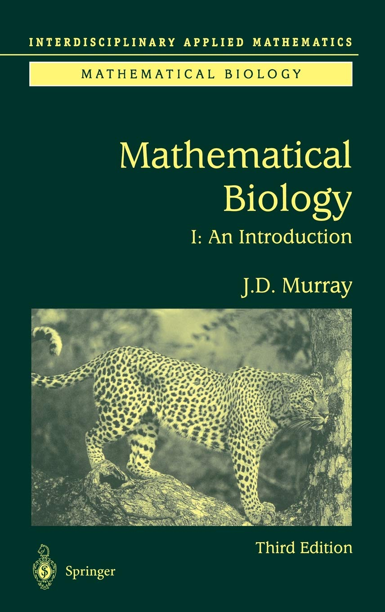
(a)
(b)
(c)
(d)
(a), (b) The bibles of Mathematical Biology. (c) Prof. Jim D. Murray (right), Prof. Philip K. Maini (centre) and Dr Thomas E. Woolley (left). (d) Prof. Philip K. Maini (left), Dr Thomas E. Woolley (centre) and Dr Josh W. Moore. (right).
Other useful references include:
J. P. Keener and J. Sneyd, Mathematical Physiology.
L. Edelstein-Keshet, Mathematical Models in Biology.
N. F. Britton, Essential Mathematical Biology.
2 Things you have forgotten
Whilst we are considering spatially uniform dynamics we will be concerned with ordinary differential equations, ODEs.
Definition 1
An ordinary differential equation (ODE) is a differential equation containing one or more functions of exactly one independent variable and derivatives of those functions.
We will be considering the rate of change of a variable, \(u\), with respect to another variable, \(t\), normally time. This dependence will be denoted
Here, \(u\) is a scalar function (i.e. one-dimensional), but more generally, we will be considering systems of variables
The values of \(u\) or \(\boldsymbol{u}\) define quantities of interest. For example they could be an animal population density, or biochemical concentrations. On the board we will usually write bold symbols with an underline1 as it is easier to see, thus, \(\boldsymbol{u}=\underline{u}\).
In order to link the changes in these quantities we define a system of ODEs in the most general way possible,
with initial condition given by
Note that the initial condition is kept general as we will usually be interested in how the dynamics of the system change for different starting points.
Definition 2
A system of differential equations is autonomous if the system does not explicitly depend on the independent variable.
When the variable is time, they are also called time-invariant systems; this simply means that we are assuming that the defined underlying laws of the system are identical to those for any point in the past, or future.
Definition 3
To save time we use a dot or prime mark to denote a derivative with respect to the argument, thus,
Traditionally, dots are primarily used when the variable is time and primes are used otherwise. Note that higher order derivatives are signified by the appropriate number of dots or primes. Namely, a second derivative would be denoted by two dots or primes, etc.
In this course we are going to occupy ourselves with systems of autonomous first-order equations, of the form
This may seem highly restrictive. However, systems of first-order equations can have extremely complicated properties, such as oscillations and chaos, which we will try to understand.
2.1 How to model a system
Modelling a system, whether it be physical, chemical, or biological, is, in some ways, more of an art than a science. You try and strip away all extraneous information and mathematically describe that which is left. In physics there are physical laws to help you, e.g. gravity, conservation of energy and mass. Unfortunately, biology has no such fundamental laws. Thus, we must use experimental intuition, e.g. predator-prey interactions from population data. Critically, the modelling should always form part of a cyclical process (see Figure 2.1).
You try to start with physical intuition (experiment), represent the important parts mathematically (model), hopefully reproduce reality (test) and, finally, use your mathematical model to predict unknown outcomes (predict). These predictions can then feed back into experiment and the process begins anew.
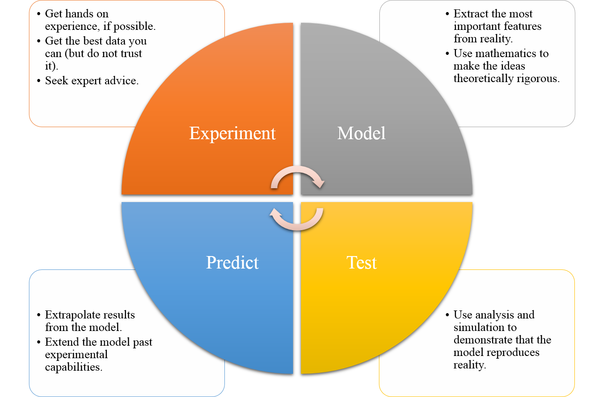
Diagram of the modelling cycle.
2.2 Law of Mass Action
In this section we will learn about a very general technique that will allow us to build an ODE system out of multiple interacting populations. These populations could represent chemical compounds, humans, cells or animals as well as different states within a population i.e. infected humans and susceptible humans. The law presented in this section is applied whenever the populations of the system are able to: (i) change identities; (ii) create more population members; or (iii) cause populations to decay. Specific examples of each of these interactions are, respectively: (i) susceptible humans becoming infected through interactions with a diseased person; (ii) animals giving birth; (iii) predators eating prey. Note that a change-of-identity interaction can itself be thought of as a combination of creation and degradation operations. For example, in the above case of infection a member of the susceptible human population is removed from the system, whilst an infected human is added to the system. Thus, all interactions can be made through combining creation and degradation operations.
We use chemical reaction notation to specify the outcomes of population interactions. Consider a system composed of \(n\) different interacting populations \((u_1,\dots,u_n)\). We assume that all interactions between the population elements lead to the creation, or destruction, of one (or more) of the \(n\) populations.
Definition 4
A rate equation specifies that an interaction involves \(a_1\) members of population \(u_1\), \(a_2\) members of population \(u_2\), etc. and produces \(b_1\) members of population \(u_1\), \(b_2\) members of population \(u_2\), etc. The equation is written as
where \(r>0\) is the reaction rate.
Note that some of the \(a_i\) and \(b_i\) values can be zero.
Rate equations provide a rigorous way of defining all of the interactions a system is assumed to undergo. However, we still require a method of converting the rate equation into an ODE. This is the power of the Law of Mass Action.
Definition 5
The Law of Mass Action states that the production rate of a reaction is directly proportional to the product of the input population sizes. Specifically, if
is the reaction of interest then the production rate is proportional to
and the accompanying ODEs are
Note that in converting from reaction equation to the ODE of \(u_i\) we need to account for the stoichiometry, i.e. \((a_i-b_i)\). Further, when multiple reactions are considered, the terms arising from the Law of Mass Action are simply added together as independent terms.
Example 2.2.1: Creating logistic growth
Consider a bacterial population \(u\) and a nutrient population \(v\), such that the bacteria use the nutrient to reproduce, i.e. ,
and the initial conditions are \(u(0)=u_0\) and \(v(0)=v_0\).
Using the Law of Mass Action we derive the following two equations:
Adding the equations together we find that
meaning that \(u+v=\) constant \(=u_0+v_0=K\) for all time. We can substitute this formula into equation (2.13) to get
where we have defined a new parameter \(r=RK\), known as the growth rate and \(K\) is known as the carrying capacity. Overall, equation (2.16) is known as the logistic equation.
2.3 Non-dimensionalisation
To non-dimensionalise a system of equations, we have the following rules:
Identify all the variables;
Replace each variable with a quantity scaled relative to a characteristic unit of measure (to be determined);
Choose the definition of the characteristic unit for each variable;
Rewrite the system of equations in terms of the new dimensionless quantities.
We note three particular points about these rules. Firstly, the theory behind non-dimensionalisation is straightforward. Namely, we substitute scaled variables into an equation system and massage the equations until we have rearranged the system to produce the desired outcome. However, in practice the difficulty of the technique lies in the algebraic manipulation; it is very easy for the terms to become lost during the manipulation. Thus, care must be taken during the algebraic manipulation stage.
Secondly, you will notice the word ‘choose’ in point 2.3. This means that it is possible to construct many different non-dimensionalised systems from the same system of equations, i.e. non-dimensionalisation is non-unique. We usually choose the characteristic unit of each variable to either emphasise one of the terms in a system or to remove as many parameters as possible.
Finally, this technique is hard to demonstrate in generality. It is much better to consider a number of examples and see how the technique works in action. Thus, what follows will be a select number of examples, which along with your problem sheets should give you a good basis in the theory. However, do not think that these are all the examples you could face.
It should be noted that there is little consistency in nomenclature across books when considering the separation of variables into their dimensional and non-dimensional components. Thus, always be clear in your definitions.
2.3.1 Examples of non-dimensionalisation through substitution of variables
Example 2.3.2: Substituting variables
Consider the equation for logistic growth,
Again, \(u=[u]u'\) and \(t= [t]t'\) can be substituted into equation (2.17) to produce
from which we see that it would be wise to take \([t]=1/r\). Beyond this we see that we have a choice. Should we take \([u]=K\), or \([u]=u_0\)? Both are valid non-dimensionalisations and either may be appropriate depending on the context of the problem.
Here, we are going to take \([u]=K\) as we are interested in the dynamics of the system, rather than the initial condition. Thus, after dropping primes, for notational convenience, we see that we can non-dimensionalise equation (2.17) to
where \(U_0=u_0/[u]=u_0/K\).
For mathematicians dropping primes is often done as the last step because we infrequently care about the actual values of the variables, rather, we study the dynamics available in the equation. However, in any specific application we should be careful to remember that the variables we are dealing with are non-dimensional and that the solution is not complete until we ‘re-dimensionalise’ the variables.
In this case the non-dimensionalisation demonstrates that the only parameter that the solution depends on is the initial condition. Changing \(r\) does not change the dynamics of the system; it only changes the time scale, since \(r=1/[t]\). Equally, changing \(K\) simply scales the size of the solution, as \(u=Ku'\).
2.3.2 Examples of non-dimensionalisation through the arrow method
The substitution method shown in Section 2.3.1 will always work, assuming that the algebra is manipulated correctly. However, the method can be cumbersome and slow. Moreover, because it involves lots of algebraic manipulations there are many chances to make a mistake.
An alternative method rests on using arrows to identify the desired balances. This can be much quicker as the initial stages do not require laborious substitution. However, we have to be more careful because not all balances that we can ‘draw’ using the arrows will be valid.
The idea behind the arrow method is that you draw arrows between the quantities that are going to ‘balance’, which simply means they are going to have the same coefficient in the final non-dimensionalised form. The process is generally the same as the substitution method. However, we must remember that in order to specify the problem completely the number of valid arrow balances must equal the number of variables. For example, if a problem depends on \(u\) and \(t\) we would need two balances. Alternatively, if the problem depended on \(u\), \(v\), and \(t\) we would need three valid balances.
Example 2.3.3: Arrow method
Consider the following equation
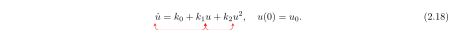
We have two variables, \(u\) and \(t\), and so we need two balances. Specifically, the arrows state that we want to balance the derivative, linear and quadratic terms,
from which it is simple to discover that
We still need to substitute the scales into the equations. Namely, \(u=u'k_1/k_2\) and \(t=t'/k_1\), but again the arrow method simplifies this task. Specifically, we know that, by design, the coefficients of the derivative, linear and quadratic terms are going to be the same. Thus, we can divide through by one of them to speed up the derivation,
Finally, redefining the last parameter as \(\alpha=k_0/(k_1[u])=k_0k_2/(k_1^2)\) and the initial condition \(u'(0)=k_2u_0/k_1=u'_0\), we can non-dimensionalise equation (2.18) to the final form of
where we have dropped the primes from the variables for simplicity.
2.4 Stationary states and stability
Now that we are able to model and simplify a physical system, we want to predict what the equations will do without having to simulate the system each time. Specifically, we are not interested in the transient initial behaviour of the equations; we want to understand what the trajectories will look like far into the future. To enable us to generate insights we first need two important definitions.
Definition 6
A state, \(\boldsymbol{u}_s\), is a steady state or stationary state of the ODE system
if it satisfies \(\boldsymbol{F}(\boldsymbol{u}_s)=0\).
This definition simply states that if the ODE system ever reaches \(\boldsymbol{u}_s\) then the system will not evolve further because all of the dynamics are in equilibrium. This is a useful concept, but currently incomplete.
For example, you can (theoretically) stand a pencil on its tip and it would remain stationary, if it were not perturbed (see Figure 2.2). Hence, this is a stationary state orientation of the pencil. However, it would require only a very small perturbation to cause the pencil to fall over and, thus, transition from the state of being on its point to being on its side (see Figure 2.2). Given a large enough perturbation (i.e. picking the pencil up) you could reset the pencil to the previous state of standing on its point. However, it requires a larger perturbation to reset the pencil than it does to knock it over and, so, we see that although these states are both stationary states they are somehow fundamentally different. This difference comes down to the intuitive concept of ‘stability’.

Stationary states of a pencil.
Definition 7
A steady state, \(\boldsymbol{u}_s\), of the ODE system
is stable if for all \(\epsilon >0\), there exists a \(\delta > 0\) and a \(t_0>0\) such that whenever \(|\boldsymbol{u}(t)-\boldsymbol{u}_s|< \delta\) then \(|\boldsymbol{u}(t)-\boldsymbol{u}_s|<\epsilon\) for all \(t \ge t_0\). Otherwise the steady state is unstable.
Simply put, this means that a state, \(\boldsymbol{u}_s\), is stable if whenever a solution \(\boldsymbol{u}(t)\) comes close enough to it then the solution tends to the state i.e. \(\boldsymbol{u}(t)\rightarrow\boldsymbol{u}_s\). In the example of the pencil, both the vertical and horizontal orientations of the pencil are stationary states. However, only the horizontal orientation is stable.
2.5 Linear stability
Having a definition of stability is one thing, but we need a method of characterising whether a system is stable or unstable. The crux of this characterisation is to consider the dynamics of an ODE system near its stationary points. To do this we substitute a solution into the equations that is a perturbation about the steady state. Using Taylor series we expand the system in terms of the perturbation and keep only the linear terms as we are assuming that the perturbation is small. Since the system is now linear we can solve the approximate equations completely and, thus, they will tell us what dynamics to expect close to the steady states.
Theorem 2.5.1
Suppose \(u_s\) is a steady state of the one-dimensional ODE,
then \(u_s\) is linearly stable if \(\mathrm{d}F(u_s)/\mathrm{d}u<0\) and linearly unstable if \(\mathrm{d}F(u_s)/\mathrm{d}u>0\).
Proof
The proof can be found in Appendix A.
We make a number of remarks about the theorem’s statement:
The theorem makes no claim about the solution’s properties in the case that the first derivative \(\mathrm{d}F(u_s)/\mathrm{d}u=0\). In this specific case we would have to go to higher order in the Taylor expansion.
Linear stability only tells us what happens close to the steady state. Thus, although a state may be stable, we have no metric for how close we have to be to the steady state before we are attracted to the stable point.
In the case that \(u_s\) is unstable we cannot conclude what happens to the trajectory. Indeed, a trajectory near an unstable point may grow without bound or, simply tend to one of the other stationary states in the system that is stable.
Example 2.5.4: Stationary states and stability of the logistic equation
The non-dimensionalised logistic equation is (as we have seen before)
Firstly, we calculate the steady states by setting \(\dot{u}=0\). Trivially, we can see that the steady states are \(u=0\) and \(1\). Next we calculate the derivative of the right-hand side of equation (2.23) with respect to \(u\),
Since,
then, from Theorem 2.5.1, we deduce that 0 is an unstable steady state and 1 is a stable steady state. These results are confirmed in Figure 2.3.

Multiple simulations of equation (2.23) with different initial conditions, \(u_0\), (noted in the legend), illustrating the stationary states and their stability characteristics.
In the case that we have a system of ODEs, we note that the definition of a steady state immediately generalises to any number of variables. Specifically, if we have \(n\) variables, \(\boldsymbol{u}=(u_1,\dots,u_n)\) then there must be \(n\) ODEs, \(\boldsymbol{F}(\boldsymbol{u})=(F_1(u_1,\dots,u_n),\dots,F_n(u_1,\dots,u_n))\), one for each variable, in order for the system to be uniquely defined. Thus, the steady states, \(\boldsymbol{u}_s\), are found from solving \(\boldsymbol{F}(\boldsymbol{u}_s)=0\). The derivation of linear stability similarly extends to higher dimensions; however, we need to first define the Jacobian.
Definition 8
The Jacobian, \(\boldsymbol{J}\), of an ODE system,
is the matrix of partial derivatives of each function, with respect to each argument,
For brevity, it is common practice to write a partial derivative as a subscript, i.e.
Equally, unless otherwise specified, we assume that the Jacobian is evaluated at the steady state.
Theorem 2.5.2
Suppose \(\boldsymbol{u}_s\) is a steady state of the ODE system
where \(\boldsymbol{F}\) is continuously differentiable everywhere in all of its arguments and the Jacobian is locally invertible. The linear stability of \(\boldsymbol{u}_s\) will depend on the eigenvalues of the Jacobian. Namely:
if all eigenvalues have negative real part then the steady state is stable;
if any eigenvalue has positive real part then the steady state is unstable.
In systems of two species we can be more specific and split the cases up further. Namely, suppose the steady state has eigenvalues \(\lambda_1\) and \(\lambda_2\),
| Eigenvalue characteristic | Steady state characteristic | |
|---|---|---|
| Eigenvalues are real | \(\lambda_1 \geq \lambda_2>0\) | Unstable node |
| \(\lambda_1>0>\lambda_2\) | Saddle point | |
| \(0>\lambda_1\geq\lambda_2\) | Stable node | |
| Eigenvalues are imaginary | \(\textrm{Re}(\lambda_1) \geq \textrm{Re}(\lambda_2)>0\) | Unstable spiral |
| \(\textrm{Re}(\lambda_1) = \textrm{Re}(\lambda_2)=0\) | Centre node | |
| \(\textrm{Re}(\lambda_1) \leq \textrm{Re}(\lambda_2)<0\) | Stable spiral |
Proof
The proofs for general systems can be found in Appendix B and the specific proof for two-species systems can be found in Appendix C.
Definition 9
A bifurcation point of a system is a parameter value at which the characteristics of the steady states change. This can be either in the number of steady states or in their stability.
Example 2.5.5: Schnakenberg kinetics
Calculate the steady state of the following system of equations
and characterise its stability.
The steady state, \((u_s,v_s)\), satisfies
Adding equations (2.32) and (2.33) together we get that \(u_s=\beta\) and, thus, from equation (2.33) \(v_s=1/\beta\). The Jacobian at the steady state is
The eigenvalues, \(\lambda\), satisfy
and, so,
From equation (2.36) we notice that \(\lambda_{\pm}>0\) whenever \(\beta^2<1 \implies 0<\beta<1\) and that \(\lambda_\pm\) are complex when,
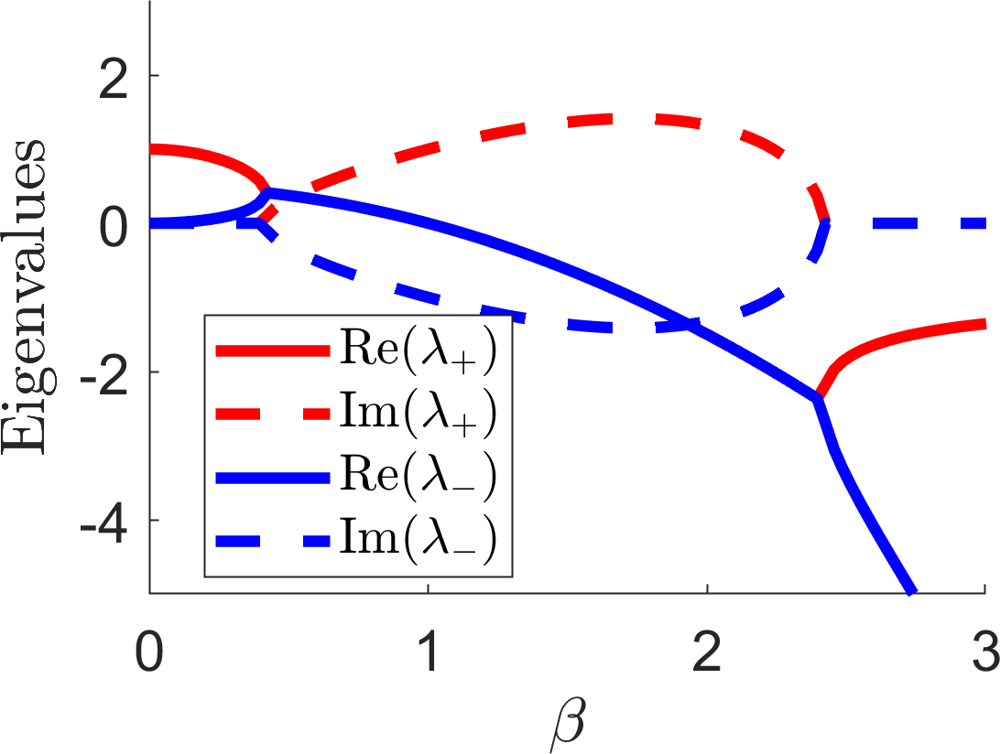
Plotting the eigenvalues from example 2.5.5.
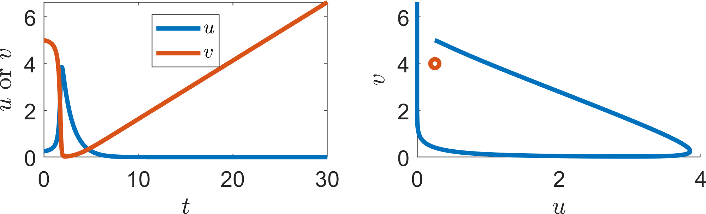
(a) \(\beta=0.25\)
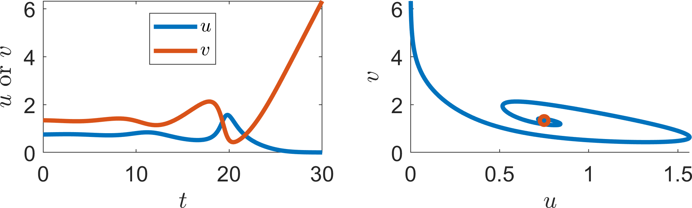
(b) \(\beta=0.75\)
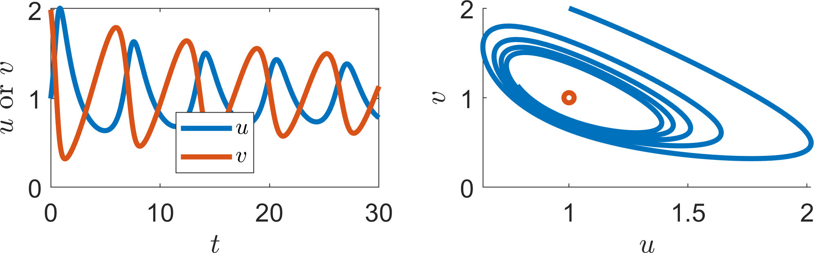
(c) \(\beta=1\)
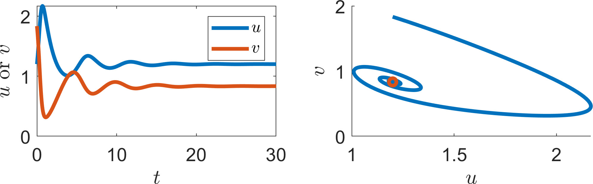
(d) \(\beta=1.2\)
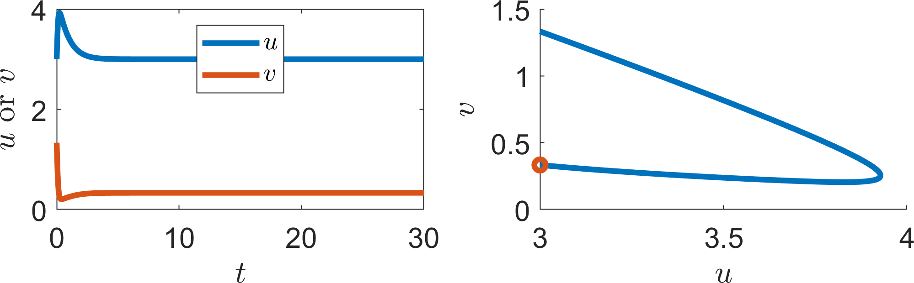
(e) \(\beta=2.5\)
Illustrating the stationary states and stability characteristics of the Schnakenberg equations from example 2.5.5. The left plots show the trajectories of each population over time. The right plots show the corresponding phase planes. The red circle in each case is the steady state \((\beta,1/\beta)\), where \(\beta\) is noted beneath each figure.
2.6 Curve sketching
Algebraic and analytical solutions will always be the surest way of providing an answer, as they provide all information regarding the quantitative values and parameter dependencies. However, such solutions are not always possible. Sometimes the algebra is not tractable, or the solution might be too cumbersome to provide clear insight. Thus, we often fall back on the skill of curve sketching.
There is no defined process to curve sketching. Essentially, you are looking for simple features that you understand and, thus, the best approach to curve sketching is through gaining experience. Namely, the more functions you sketch the larger your catalogue of known shapes. However, there are some general tips that will help you sketch simple curves, as well as a number of stereotypical examples you should know well.
Suppose we want to sketch the curve \(f(x,\mu)\), where \(x\) is the argument and \(\mu\) is a parameter. The general tips are:
look for any “obvious” roots, \(x_c\) such that \(f(x_c)=0\) of the function you are trying to sketch, i.e. consider \(0,1,\infty\), or immediate simple parameter dependencies, e.g. \(x_c=\mu\), or \(\mu^2\).
consider the general curve properties, thus, even if you cannot derive the roots, can you say that there must be roots? For example a cubic must always have at least one real root.
for any roots that you have found consider the derivative close to the points (if possible). This will tell you which way the curve is crossing the \(x\)-axis. Namely, if \(f'>0\) the curve is passing into the upper half-plane, whilst if \(f'<0\) then the curve is passing into the lower half-plane.
consider what happens to the function near \(x=0\) and \(x\rightarrow \infty\). Equally, are there any particularly simple limits of \(\mu\)?
consider the dependency of the function \(f\) on \(\mu\). Are there direct correlations? Namely, does increasing \(\mu\) always increase/decrease the value of \(f(x,\mu)\)?
2.6.1 Specific curves and their properties
Generally, in this course, we will consider polynomial dependencies, as well as rational polynomial fractions. Although this seems quite restrictive, most models are constructed out of this small toolkit, specifically because they have “nice” properties, such as being well understood and easy to sketch. Further, even if we come across something more complicated, Taylor series guarantee that we can consider polynomial expansions in some small interval around the point of interest.
2.6.1.1 Polynomials
A polynomial of leading order \(n\) is guaranteed to have \(n\) roots over the complex plane. However, as we are applying these functions to real biological situations we, generally, only need to consider the real, positive roots. Thus, although a polynomial may have many roots (see Figure 2.6), we can guarantee that a minimum number exists. Specifically:
polynomials with an odd leading order term are guaranteed to have at least one real root.
polynomials with an even leading order term may have no real roots.
Note that just because there are roots, this does not mean that they are physically meaningful. Frequently, when multiple roots exist, we will invoke reality to justify the choice of only real, positive roots as we, generally, consider positive populations.
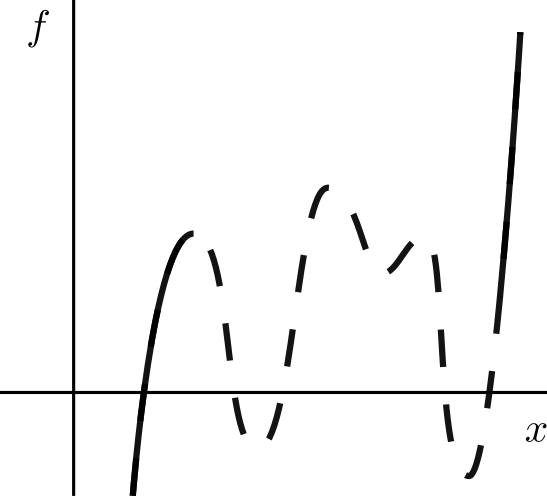
(a)
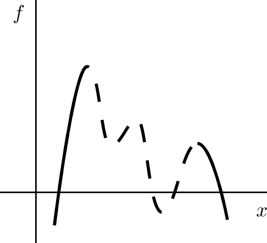
(b)
Basic polynomial properties. The lines have dashed centres as the shape can be altered depending on the specific polynomial used. However, the minimum number of roots can be guaranteed (if there are any). (a) A general odd polynomial. (b) A general even polynomial (with negative leading order term).
2.6.1.2 Hill functions
Hill functions are also common functions that are used widely as they can cover a wide variety of outcomes. They have the form
where \(\alpha\) and \(\beta\) are control parameters.
Although, below, we consider \(\alpha=\beta=1\) changing these parameters does not, generally, change the qualitative properties we are illustrating. The parameters only tend to influence the quantitative behaviour of the function e.g. how big the gradients are, or where the transitions happen.
Generally, \(m=n\) (which is the usual definition of the Hill function), but there is no reason why this is so. Further, the function has different properties for the different cases of \(m\) relative to \(n\). See Figure 2.7 for the possible outcomes. In all cases the dynamics will be dominated by \(x^m\) for small \(x\) and \(x^{m-n}\) for large \(x\). This is why we need to consider the sign of \(m-n\).
When \(m>n\), although there may be stationary points, the curve will eventually tend to grow without bound.
When \(m=n\), \(x^{m-n}=1\). Thus, the function asymptotes to \(f\rightarrow 1\). Such Hill functions are used as “switches”, namely one type of dynamic occurs when \(x\) is small and another occurs when \(x\) is large. The steepness of the switch is controlled by the size of \(m=n\); larger values create a sharper transition.
When \(m<n\), \(x^{m-n}=1/x^{n-m}\rightarrow 0\) as \(x\rightarrow 0\). Thus, although we have an initial hump the curve decays to zero.
Thus, we can see why Hill functions are so powerful, namely, they are able to describe growth, saturation and decay all through the sign of \(m-n\).
(a) \(m>n\)
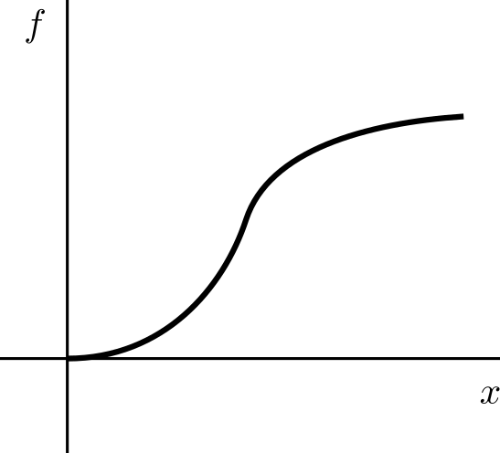
(b) \(m=n\)
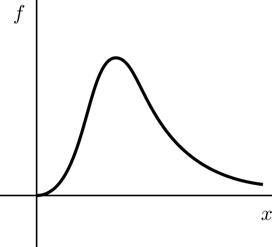
(c) \(m<n\)
The general shape of Hill functions, equation (2.37), with (a) \(m>n\), (b) \(m=n\) and (c) \(m<n\).
2.7 Phase planes
2.7.1 One-dimensional
In one dimension the phase plane is a plot of the dynamics in the \((u,\dot{u})\) plane. Steady states can easily be read off as they are where the curve crosses the \(x\)-axis. Equally, we can determine the stability of the steady states by considering where the curve lies.
Specifically, whenever the curve lies in the top half plane \(\dot{u}>0\) and, thus, \(u\) increases over time. Thus, \(u\) will increase without bound, or until the curve crosses the \(x\)-axis, at which point \(\dot{x}=0\). Similarly, in the bottom half plane \(\dot{u}<0\) and, so, \(u\) decreases over time, either without bound, or until the curve cuts the \(x\)-axis.
Example 2.7.6: Logistic equation phase plane
Consider
The phase plane of the logistic equation is plotted with dynamic arrows in Figure 2.8. Critically, these arrows verify the results seen in example 2.5.4, namely, \(u=0\) is unstable as trajectories diverge away from it, whilst \(u=1\) is stable as trajectories tend to this state. These insights match those gained from example 2.5.4.
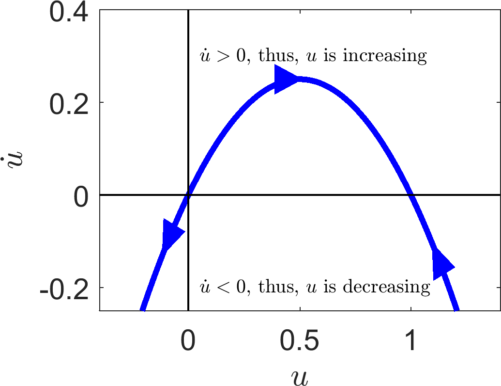
The phase plane plot of the logistic curve in \((u,\dot{u})\) coordinates.
2.7.2 Two-dimensional
In Section 2.7.1 we could understand the entire dynamics of a one species system in the \((u,\dot{u})\) plane. We would like to gain the same information for systems with multiple populations. However, when we have two variables we would have to plot four variables \((u,v,\dot{u},\dot{v})\), which is hard to visualise and almost impossible to sketch. Thus, we simplify our plot and only consider the \((u,v)\) plane instead, which is known as the ‘phase plane’. To construct a phase plane (instead of considering a single trajectory, as in the \((t,u)\) simulation) we consider the motion of a trajectory across all points in the \((u,v)\) space.
To aid in our understanding we introduce a new concept.
Definition 10
Consider an ODE system
where \(\boldsymbol{F}(\boldsymbol{u})=(F_1(u_1,\dots,u_n),\dots,F_n(u_1,\dots,u_n))\). The nullclines are the curves defined by
for all \(i=1,\dots,n\).
Nullclines are a useful concept because on each separate curve the dynamics of at least one variable are stationary, thus, the direction across a nullcline is simplified. Moreover, if all nullclines meet at a given point, all dynamics must be stationary, i.e. by definition all nullclines meet at steady states.
The nullclines then delineate different dynamical regions. Namely, consider a general nullcline, for example \(\dot{u}=0\), on one side of the line \(\dot{u}>0\), whilst on the other \(\dot{u}<0\) (note this is not necessarily true). The same can be said of the \(\dot{v}=0\) nullcline. Thus, the nullclines segment the \((u,v)\) plane into regions of different dynamics. With this knowledge we can specify the signs of the derivatives in each region and, thus, sketch what will happen in each case.
Example 2.7.7: Two-dimensional phase plane
Consider the system
in the half plane \(u>0\).
The steady states of this would satisfy
which has no closed form solution. We could estimate the solutions using a numerical root finding algorithm. However, by plotting the nullclines,
in Figure 2.9(a), we immediately see there are exactly two steady states.
We first consider the \(\dot{u}\) nullcline
illustrated in Figure 2.9(b). Pick any point vertically higher than the curve, e.g. (2,10), and consider the sign of equation (2.41). Specifically, substituting this value in we get
Thus, above the curve \(\dot{u}>0\) and \(\dot{u}<0\) below the curve (see Figure 2.9(b)). Once we know the sign of the derivative in each section we can draw arrows to illustrate the local direction in which the trajectory will be heading. For example, in a region with \(\dot{u}>0\) the \(u\) coordinate will be increasing and, so, the arrowhead points to the right i.e. the direction of increasing \(u\).
We can do the same for the \(v\) regions. For example, consider the point \((5,0)\),
Hence, to the right of the \(v\) nullcline \(v\) is decreasing. By a similar process \(v\) is increasing to the left of the \(v\) nullcline (see Figure 2.9(c)).
We now combine this information in each region providing a sketch of how a trajectory will act anywhere in the plane. In addition we add arrows to the nullclines where we remember that there is no movement in the \(u\) direction on the \(u\) nullcline and no movement in the \(v\) direction along the \(v\) nullcline. Namely, the arrows are vertical and horizontal on the \(u\) and \(v\) nullclines, respectively. Equally, we pay explicit attention to which way these arrows are directed according to the surrounding information.
All of this information is plotted in Figure 2.9(d). Critically, in this case we are able to suggest what forms the steady states will have. The steady state on the left (approximately (1.6,0.5)) will be unstable because all of the arrows near to the steady state point away from the steady state. The steady state on the right (approximately, (3.8,1.3)) appears to be a saddle as arrows in the horizontal direction point towards the steady state, whilst arrows in the vertical direction point away from the state.
However, to ensure we are right we have to run the analysis. We will not do this here because the algebra gets very hairy and, as mentioned, you would need to use a numerical root finder to estimate the steady states to substitute into the Jacobian. If we do do this numerically we find that the eigenvalues of the left steady state are \(\lambda_\pm\approx 1.36\pm0.69I\), thus, the point is indeed unstable, but an unstable spiral, which we could not have predicted from the graph. The eigenvalues for the steady state on the right are \(\lambda_-\approx -2.43<0<0.92=\lambda_+\), hence the point is a saddle, justifying our diagram.
From this example we have seen that phase planes are helpful diagrams, which encapsulate lots of stability information. However, as illustrated, in comparing the diagram with the actual analytical values of the eigenvalues it can be difficult to tell the difference between (un)stable nodes and (un)stable spirals. Equally, sketches only provide the correct insight if you draw the system correctly. If there had been a parameter in this system that we could vary then there may have been a stability case, dependent on the parameter, that we would miss if we had only drawn one diagram. Thus, a phase plane should always be backed up with linear analysis. The linear analysis provides the local information, whilst the phase plane allows us to approximately see how all the dynamics fit together.
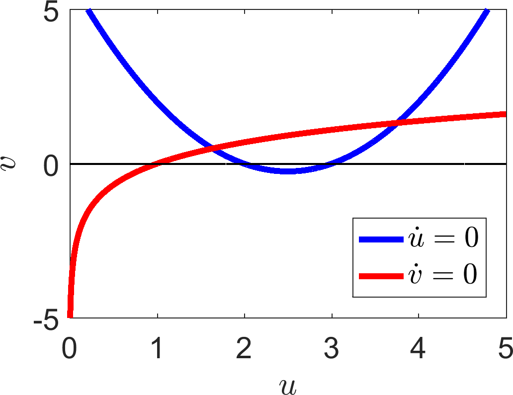
(a)

(b)
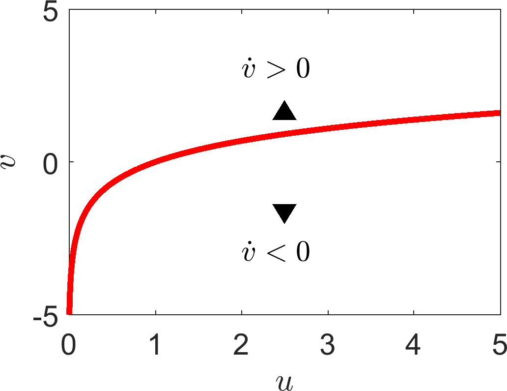
(c)
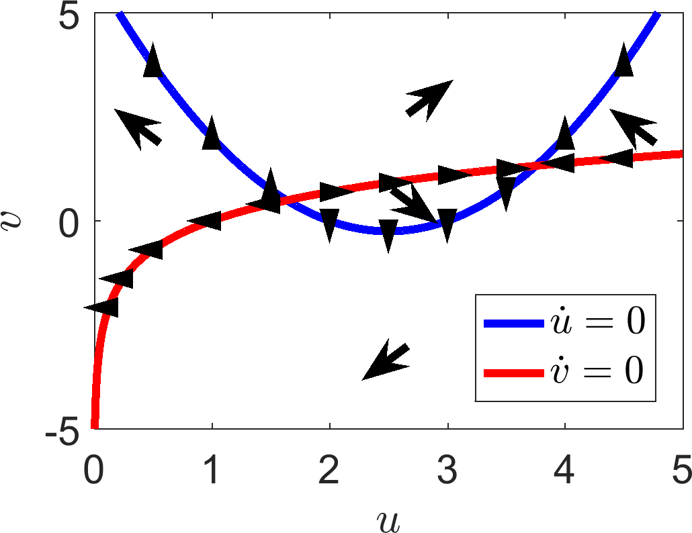
(d)
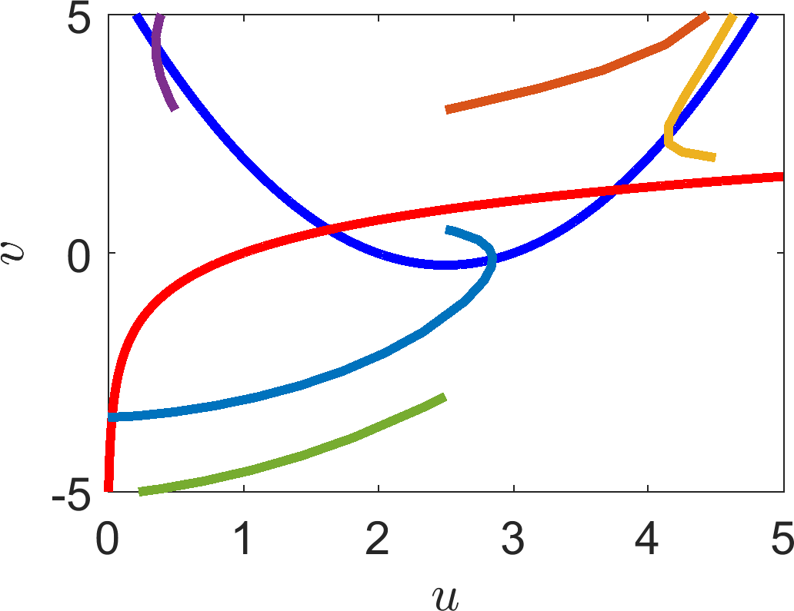
(e)
(a) Plot of the nullclines of equations (2.41) and (2.42). Specifying the signs of the derivatives on either side of the (b) \(\dot{u}\) and (c) \(\dot{v}\) nullcline. The arrowheads indicate the general direction that a trajectory will be heading. These results can then be combined into the direction plots seen in (d). Finally, in (e), we simulate a number of trajectories, which demonstrate that the arrows in (d) provide the correct general idea.
2.8 Check list
By the end of this chapter you should be able to:
reproduce all definitions;
convert a system of population interactions into reaction equations;
convert reaction equations into ODEs using the Law of Mass Action;
non-dimensionalise a system of equations using direct substitution, or the arrow method;
sketch simple curves;
derive the steady states and their dependence on any given parameters;
derive the stability of the steady states and their dependence on any given parameters;
identify parameter dependent bifurcations;
define what a nullcline is;
understand the relationship between steady states and the points at which nullclines cross;
plot nullclines;
sketch arrows showing general trajectory directions on the phase plane;
interpret the stability of the steady states from the information plotted on a phase plane.
3 Population modelling
When modelling the changes to any population we must ensure that we include any pertinent production sources and removal sinks. This ensures that we maintain “population conservation”. Namely, all creation and degradation are accounted for in the following word equation (see Figure 3.1),
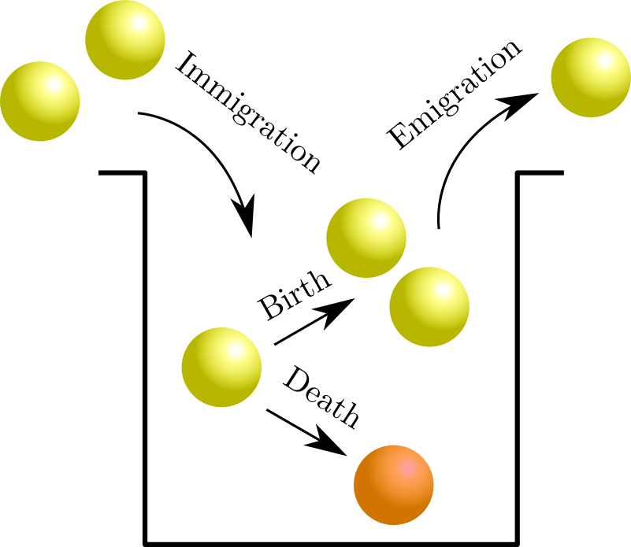
Population changes stem from four basic dynamics.
In this chapter we assume that the system is closed and thus there is no emigration or immigration. Namely, we assume that the problem has no spatial variation, or that it is not important. Thus we simply consider the temporal evolution of the system.
3.1 Continuum modelling
There are multiple ways of modelling a population. If there is a large number of individuals in the population and we want to consider how the population changes over continuous time we can use ODEs to define the rules governing the evolution and, hence, predict how the population will fare.
Definition 11
Suppose there exists a function \(g\) such that \(\dot{u}=f(u)\) can be written as
then \(g\) is known as the intrinsic growth rate.
Example 3.1.8: Growth law examples
The Malthus model, 1798
\[\begin{align*} u&\stackrel{b}{\rightarrow}2u,\\ u&\stackrel{d}{\rightarrow}\slashed{0}. \end{align*}\]From the law of mass action we get
\[\begin{equation*} \dot{u}=u(b-d)\quad u(0)=u_0. \tag{3.2}\end{equation*}\]Equation (3.2) can easily be solved to produce the solution \(u=u_0\exp\left((b-d)t \right)\). However, we can get all the information from equation (3.2) just from considering different cases of \(b\) and \(d\). Namely,
\[\begin{equation*} u\textrm{ is }\left\{ \begin{array}{rl} \textrm{exponentially growing if} & b>d, \\ \textrm{not changing if} & b=d, \\ \textrm{exponentially decaying if} & b<d. \end{array} \right. \tag{3.3}\end{equation*}\]The Verhulst Model, 1845. Also commonly known as the Logistic Growth Model.
\[\begin{align*} u&\stackrel{r}{\rightarrow}2u,\\ 2u&\stackrel{r/K}{\rightarrow}u. \end{align*}\]The Logistic equation is
\[\begin{equation*} \dot{u}=ru\l 1-\frac{u}{K}\r \end{equation*}\]Using partial fractions, we can directly solve for \(u\). Specifically,
\[\begin{align*} \frac{\rd u}{\rd t}&=ru\l 1-\frac{u}{K}\r,\\ \Rightarrow\int_0^T\frac{\rd u}{u(1-u/K)}&=\int_0^Tr \rd t,\\ \Rightarrow\int_0^T \frac{1}{u}+\frac{1/K}{1-u/K} \rd u&=rT,\\ \Rightarrow\left[\ln(u)-\ln\l 1- \frac{u}{K} \r \right]^T_0&=rT,\\ \Rightarrow\ln\l\frac{u}{1- \frac{u}{K}} \r-\ln\l\frac{u_0}{1- \frac{u_0}{K}} \r&=rT,\\ \Rightarrow u(T)&=\frac{K}{1+\frac{K-u_0}{u_0}\exp\l{-rT}\r}. \tag{3.4}\end{align*}\]
Example 3.1.9: US population
In 1845 Pierre Verhulst used 60 years’ worth of population data from the US census and was able to predict the population for the next 100 years. See Table 3.1 and Figure 3.2.
What goes wrong after 1950 in Figure 3.2(a)?
In Figure 3.2(b) one of the fitted parameters is \(K=309.3\). What does this mean?
The US population in 2018 was over 327 million. Should we use the logistic equation to model the US population?
Multiple possible answers: the Second World War created the baby boomer generation, who produced a lot of children; medicine/ hygiene/ food production became a lot better after the Second World War due to scientific advances and operations research.
It suggests that the maximum population of the US should be around 309 million.
Could be answered both yes or no.
Yes: there is certainly going to be a fundamental limit to the population the US can sustain (the carrying capacity). The current population is within \(\pm10\%\) of the prediction, so not too bad.
No: we do not know what the limiting factors are so, we cannot encode them in the equation. The logistic equation contains an exponential factor, meaning that the results are very sensitive to small changes. The model assumes the population does not have external interference and, so, diseases, wars, and/or technological advances, which can fundamentally change a population are not considered.
| Year | US census data in millions | Population prediction in millions |
|---|---|---|
| 1790 | 3.929 | 3.929 |
| 1800 | 5.308 | 5.346 |
| 1810 | 7.240 | 7.255 |
| 1820 | 9.638 | 9.808 |
| 1830 | 12.866 | 13.195 |
| 1840 | 17.069 | 17.635 |
| 1850 | 23.192 | 23.3700 |
| 1860 | 31.443 | 30.635 |
| 1870 | 38.558 | 39.616 |
| 1880 | 50.156 | 50.388 |
| 1890 | 62.948 | 62.851 |
| 1900 | 75.996 | 76.681 |
| 1910 | 91.972 | 91.339 |
| 1920 | 105.711 | 106.132 |
| 1930 | 122.775 | 120.346 |
| 1940 | 131.669 | 133.373 |
| 1950 | 150.697 | 144.802 |
| 1960 | 179.323 | 154.455 |
| 1970 | 203.185 | 162.347 |
| 1980 | 226.546 | 168.630 |
| 1990 | 248.710 | 173.527 |
Table 3.1.
US population census data between 1790 and 1990 and the accompanying prediction by the logistic equation. The bold data at the top was all that was known to Verhulst in 1845.
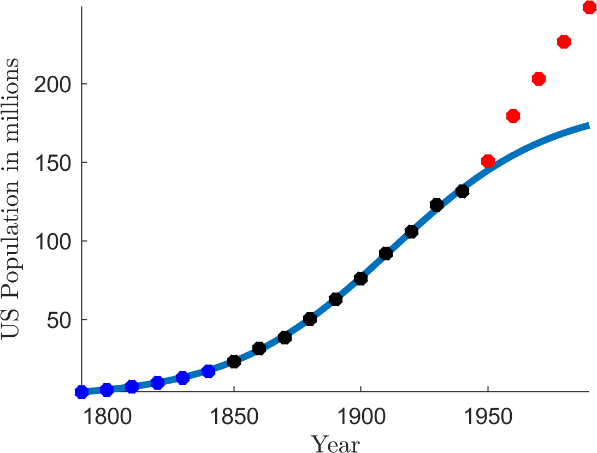
(a)
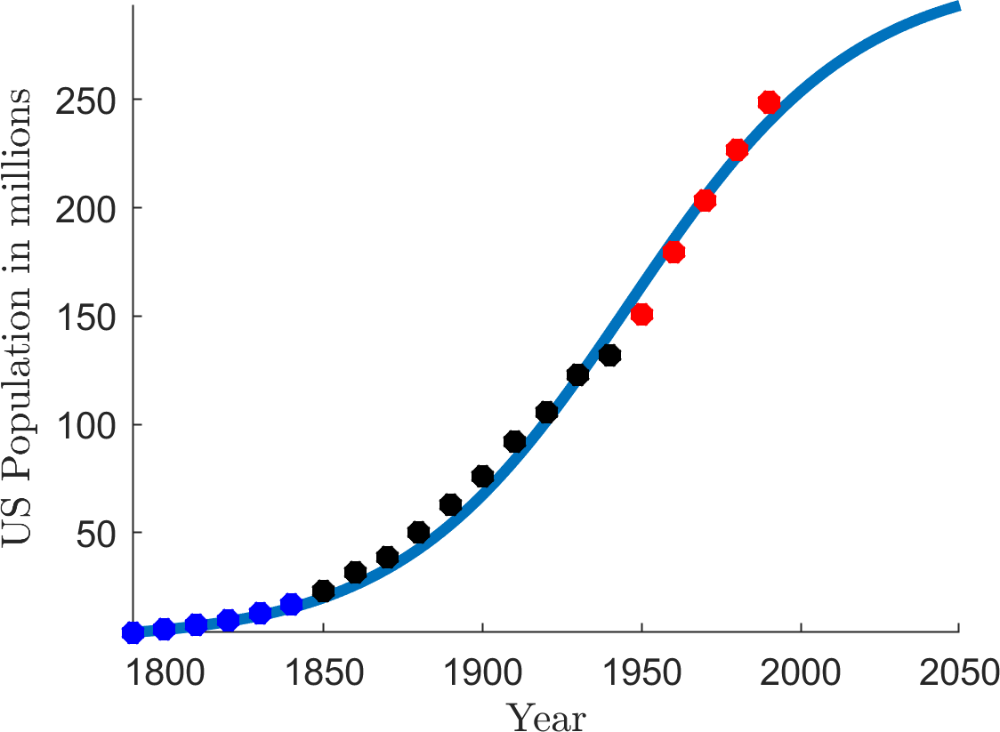
(b)
(a) The logistic curve fitted by Verhulst in 1845 to US census data. The blue dots are the data known to Verhulst. The black data is the next 100 years’ worth of data. The initial condition is given by the data \(u_0=3.929\). The fitted parameters are \(K=188.3\) and \(r=0.0316\). (b) The logistic curve fitted with all data up to 1990. The fitted parameters are \(K=309.3\) and \(r=0.0280\). See example 3.1.9.
Spruce budworm in moth and larval stages.
Example 3.1.10: Spruce budworm
Spruce budworm (see Figure 3.3) are preyed upon by spiders, miscellaneous insects, and birds. A model for their population size, \(N\) is given by
What does each term in the equation mean?
Describe, with a sketch, three properties of the predation term
\[\begin{equation*} \frac{BN^2}{A^2+N^2}. \tag{3.6}\end{equation*}\]Hint: consider low, medium and high values of \(N\).
Non-dimensionalise the equation to give the form
\[\begin{equation*} \frac{\rd u}{\rd \tau}=\underbrace{ru\l 1-\frac{u}{k}\r}_{f_1(u)}-\underbrace{\frac{u^2}{1+u^2}}_{f_2(u)}. \tag{3.7}\end{equation*}\]By sketching the two terms, \(f_1\) and \(f_2\) separately, show there are between 2 and 4 steady states (depending on the values of \((r,k)\)).
By considering the \(f_1-f_2\) sketches, characterise the steady state stabilities in all cases.
Spruce budworm destroys spruce trees and, so, we would like their population to be extinct. However, what can happen if there is a large outbreak?
- \[\begin{equation*} \underbrace{\dot{N}}_{\textrm{Population evolution.}}=\underbrace{RN\l 1-\frac{N}{K}\r}_{\textrm{Logistic growth, \textit{i.e.} linear growth with competition.}}-\underbrace{\frac{BN^2}{A^2+N^2}}_{\textrm{Predation effects.}}. \tag{3.8}\end{equation*}\]
For low populations there is little predation. As the population grows, so does the predation. The predation saturates at large population sizes.
We have two degrees of freedom, \(N=[N]u\) and \(t=[t]\tau\), so we need two balances. Comparing the original equation with the equation we want we see that the balances are
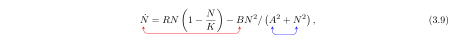
which give the following equalities:
\[\begin{equation*} \frac{[N]}{[t]}=B, \quad [N]^2=[A]^2. \tag{3.10}\end{equation*}\]Hence,
\[\begin{equation*} [N]=A,\quad [t]=\frac{A}{B}. \tag{3.11}\end{equation*}\]Note that you have to be careful because the dimensions of the \(N^2\) in the numerator of the predation fraction cancel with those in the denominator.
Substituting these into equation (3.5) we get
\[\begin{equation*} B\dot{u}=R[N]u\l 1-\frac{[N]u}{K}\r-\frac{B[N]}{A}\frac{u^2}{1+u^2}. \end{equation*}\]Divide through by \(B\) and replace \([N]\) with \(A\) to get
\[\begin{equation*} \dot{u}=\frac{RA}{B}u\l 1-\frac{Au}{K}\r-\frac{u^2}{1+u^2}. \end{equation*}\]Finally, we can see that
\[\begin{equation*} r=\frac{RA}{B},\quad k=\frac{K}{A}. \tag{3.12}\end{equation*}\]See Figure 3.4. We approach the sketching via the following steps:
Note any “obvious” crossings, i.e. \(u=0,1,\) or immediate parameter dependencies. Here, we see that both terms cross at \(0\), thus, there is at least one steady state.
Next, consider the derivatives at these obvious points. Namely, \(u^2/(1+u^2)\) has \(0\) derivative at \(u=0\), whereas \(ru(1-u/k)\) has derivative \(r>0\) at \(u=0\). Thus, at least for a small interval of \(u\) near zero, \(f_2>f_1\)
Consider the dynamics for large values of \(u\). Here, \(f_1\rightarrow 1\), whilst \(f_2\rightarrow -\infty\).
Combining the two previous points that initially \(f_2>f_1\) but eventually \(f_2<f_1\) means that there must be at least one more crossing for \(u>0\) (see left and right of Figure 3.4 in particular).
Consider what each parameter does. Namely, \(k\) controls the width of the logistic parabola of \(f_1\), whereas \(r\) controls the height. Playing around with multiple sketches, we will eventually find the middle case of Figure 3.4.
By considering the bottom row of figures we can characterise the stability of the steady states. Firstly, \(u_c=0\) is always unstable. Whenever there are two steady states \(u_{c1}=0\) and the larger state \(u_{c2}>u_{c1}\) the larger steady state is always stable. Whenever there are four steady states we denote them \(u_{c1}<u_{c2}<u_{c3}<u_{c4}\) and note that \(u_{c1}\) and \(u_{c3}\) are unstable, whilst \(u_{c2}\) and \(u_{c4}\) are stable.
Unfortunately, the extinction state is never stable. Thus, trying to destroy them all is futile because if any are left they will repopulate their species. In the case of a big outbreak, \(r>>1\), which means that the population will evolve to the large population state. Even if the growth rate, \(r\), is returned to normal the population will remain at the larger population. Thus, this system exhibits hysteresis, and \(r\) would have to be reduced beyond its original value, before the population would collapse back to its original population.
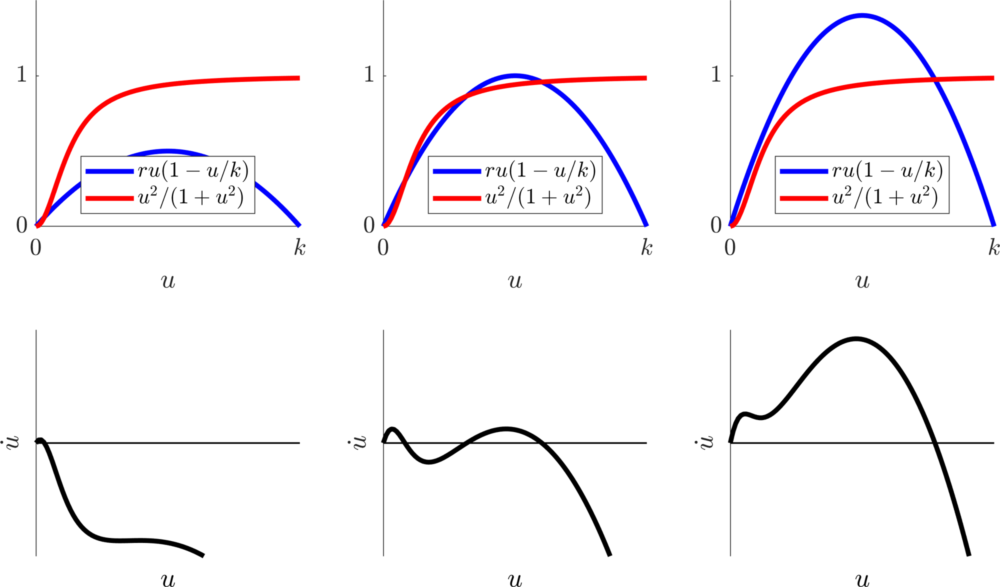
Parameter dependence of the Spruce budworm dynamics. \(r\) is increasing left to right. The top images are plots of \(f_1\) and \(f_2\), whilst the bottom illustrates the phase plane \((u,\dot{u}=f_1-f_2)\).
3.1.1 Disease transmission
The study of infectious diseases has a long history and there are numerous, detailed models of a variety of epidemics and epizootics (i.e. animal epidemics). We can only possibly scratch the surface. In the following, we consider a simple framework model but even this is capable of highlighting general comments about epidemics and, in fact, approximately describing some specific epidemics.
Critically, one of the questions we will seek to answer is: when does a disease become an epidemic? Once we have set up the mathematical description of the disease we will see that expressing the idea of an epidemic as an increasing number of infections will be fairly simple.
We consider a disease for which the population can be placed into 3 compartments:
a Susceptible compartment, \(S\), who can catch the disease.
an Infective compartment, \(I\), who have and transmit the disease.
a Removed compartment, \(R\), who have been isolated, or who have recovered and are immune to the disease, or have died due to the disease during the course of the epidemic.
In order to derive the equations we make the following assumptions:
The disease is of short duration so that the population is constant (counting those who have died due to the disease during the course of the epidemic).
The disease has a negligible incubation period.
If a person contracts the disease and recovers, they are immune (and hence remain in the removed compartment).
The numbers involved are sufficiently large to justify a continuum approximation.
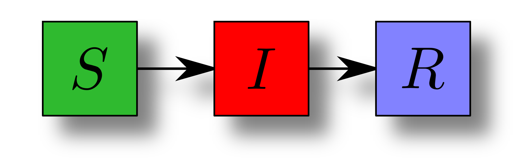
Schematic view of disease transmission. Susceptibles become infectious and, eventually, become removed from the system.
The ‘dynamics’ of the disease can be described by applying a Law of Mass Action to
which provide the following ODEs:
In terms of initial conditions we usually assume that there is no natural immunity, thus, \(R_0=0\) because no one has yet recovered, died, or otherwise been removed from the disease. The other initial conditions, \((S_0,I_0)\), are unknown and can be treated as parameters, or fitted to data.
Definition 12
A disease is classed as an epidemic if the number of infections is growing in the population. Explicitly, an epidemic is occurring if \(\dot{I}>0\).
Example 3.1.11: SIR questions
Suppose we know the parameters \(r\) and \(a\), which can be estimated from data. We then develop methods to approach the following key questions.
Noting that \(R\) decouples, construct a \((S,I)\) phase plane with nullclines and dynamic arrows to better understand the possible dynamics.
See Figure 3.7(b).
Will the disease spread, i.e. will the number of infectives increase, at least in the short-term?
This question is asking if the number of infectives will increase initially. The number of infectives increases initially if and only if the derivative at time \(t=0\) is positive, \(rS_0I_0-aI_0>0\). Since \(I_0>0\) we can simplify this comment to the number of infectives increases initially if and only if
\[\begin{equation*} \frac{rS_0}{a}>1. \tag{3.18}\end{equation*}\]Definition 13
\[\begin{equation*} \rho=\frac{S_0r}{a} \tag{3.19}\end{equation*}\]is called the reproduction number. We can interpret \(\rho\) as the average number of secondary infections that would be produced by one infective in a wholly susceptible population of size \(S_0\).
Critically, we see here that an outbreak happens when \(\rho>1\), whilst the infection dies out when \(\rho<1\).
What will be the maximum number of infectives at any given time?
Notice that \(\dot{R}\) can be decoupled from the system since equations (3.15) and (3.16) are independent of \(R\).
From question 1 if \(\rho<1\) then the number of infectives is decreasing, thus, in this case, the maximum number is the initial number \(I_0\).
If \(\rho>1\) then we have to do a bit more work. Namely, we have to evaluate \(I_{\textrm{max}}\), critically, we note that at \(I=I_{\textrm{max}}\) we must have \(\dot{I}=0\) meaning that at the maximum point we have \(S=a/r\).
Notice that dividing equation (3.16) by equation (3.15) gives
\[\begin{equation*} \frac{\rd I/\rd t}{\rd S/\rd t}=\frac{\rd I}{\rd S}=-1+\frac{a}{rS}, \tag{3.20}\end{equation*}\]which can be integrated directly to
\[\begin{equation*} \int^I_{I_0}\rd I'=\int^S_{S_0}-1+\frac{a}{rS'}\rd S', \tag{3.21}\end{equation*}\]\[\begin{equation*} \implies I(t)-I_0=-S(t)+S_0+\frac{a}{r}\ln\l\frac{S(t)}{S_0}\r. \tag{3.22}\end{equation*}\]By point 13 we substitute \(S=a/r\) into equation (3.22). Thus,
\[\begin{equation*} I_{\textrm{max}}=I_0-\frac{a}{r}+S_0+\frac{a}{r}\ln\l\frac{a}{rS_0}\r. \tag{3.23}\end{equation*}\]In summary
\[\begin{equation*} I_{\textrm{max}}= \left\{ \begin{array}{ll} I_0 & \textrm{if } \rho<1, \\ I_0+S_0-\frac{a}{r}+\frac{a}{r}\ln\l\frac{a}{rS_0}\r & \textrm{if } \rho>1. \end{array} \right. \tag{3.24}\end{equation*}\]
How many people in total catch the disease?
Note that all infectives become removed eventually, thus, the total number that catch the disease is the total number of people in the removed category at the end of the infection, i.e. far into the future. Call this number \(R_\infty\).
As time increases the number of infectives must eventually reduce because we have a finite population and at most everyone can have the infection once. Thus, \(\lim_{t\rightarrow\infty} I(t)=0\).
Using equation (3.22)
\[\begin{equation*} \lim_{t\rightarrow\infty} I(t)=0=I_0-S_\infty+S_0+\frac{a}{r}\ln\l\frac{S_\infty}{S_0}\r. \tag{3.25}\end{equation*}\]From adding equations (3.15)–(3.17) we see that \(S+I+R=\) constant \(=N=\) total population. Taking time to the two different limits of zero and infinity we can relate the initial condition and final steady states through \(N\), namely,
\[\begin{equation*} N=S_0+I_0=S_\infty+R_\infty. \tag{3.26}\end{equation*}\]Hence,
\[\begin{equation*} R_\infty=N-S_\infty, \tag{3.27}\end{equation*}\]where \(S_\infty\) satisfies the following equation
\[\begin{equation*} 0=N-S_\infty+\frac{a}{r}\ln\l\frac{S_\infty}{S_0}\r. \tag{3.28}\end{equation*}\]Having derived equation (3.28), we must question the existence and uniqueness of potential solutions.
To check that at least one root exists we first rearrange equation (3.28)
\[\begin{equation*} S_\infty-\frac{a}{r}\ln\l S_\infty\r=N-\frac{a}{r}\ln\l S_0\r, \tag{3.29}\end{equation*}\]where the right-hand side of equation (3.29) is just a constant. Thus, we have to sketch the left-hand side of equation (3.29) to get an idea of what the solution looks like.
From Figure 3.6 we see that equation (3.28) can have 0 to 2 roots, with 1 root occurring as a special case, which we will tend to ignore. Thus, our first job is to check that the case of no roots never exists. Namely, we must show that the minimum of \(S_\infty-a\ln\left(S_\infty\right)/r\) is always less than (or equal to) \(N-a\ln\left(S_0\right)/r\). Let
\[\begin{equation*} f(s)=s-\frac{a}{r}\ln(s) \tag{3.30}\end{equation*}\]The minimum of equation (3.30) is where the derivative is zero. Thus,
\[\begin{equation*} f'(s)=1-\frac{a}{rs}=0\implies s=\frac{a}{r}, \tag{3.31}\end{equation*}\]is the location of the minimum and
\[\begin{equation*} f\l\frac{a}{r}\r=\frac{a}{r}-\frac{a}{r}\ln\l\frac{a}{r}\r \tag{3.32}\end{equation*}\]is the minimum value. Note we should strictly check whether the critical point is a minimum, maximum, or inflection. However, we will take it as given due to the sketches we have generated.
For a contradiction suppose
\[\begin{equation*} \frac{a}{r}-\frac{a}{r}\ln\l\frac{a}{r}\r>N-\frac{a}{r}\ln\l S_0\r. \tag{3.33}\end{equation*}\]Divide through by \(S_0\) and rearrange to get
\[\begin{equation*} \frac{a}{rS_0}-\frac{a}{rS_0}\ln\l\frac{a}{rS_0}\r>\frac{N}{S_0}, \tag{3.34}\end{equation*}\]which simplifies to
\[\begin{equation*} \frac{S_0}{N}> \frac{\rho}{1+\ln(\rho)}. \tag{3.35}\end{equation*}\]Critically, we know that \(1\geq S_0/N\). Further, by considering the shape of \(g(\rho)=\rho/(1+\ln(\rho))\) we can see that the minimum of \(g\) occurs at
\[\begin{equation*} g'(\rho)=\frac{1+\ln(\rho)-1}{(1+\ln(\rho))^2}=0\implies \rho=1, \tag{3.36}\end{equation*}\]where \(g(1)=1\). Hence we derive
\[\begin{equation*} 1\geq\frac{S_0}{N}> \frac{\rho}{1+\ln(\rho)}\geq 1. \tag{3.37}\end{equation*}\]Thus, by contradiction,
\[\begin{equation*} \frac{S_0}{N}\leq \frac{\rho}{1+\ln(\rho)}, \tag{3.38}\end{equation*}\]meaning
\[\begin{equation*} \min_{S_\infty}\l S_\infty-\frac{a}{r}\ln\l S_\infty\r\r\leq N-\frac{a}{r}\ln\l S_0\r \tag{3.39}\end{equation*}\]and, so, equation (3.29) always has at least one root and probably two.
Now that we have existence we have to consider uniqueness. Namely, which of the two roots of equation (3.29) do we require? To answer this we consider the \((S,I)\) phase plane. We note that \(I=0\) is a nullcline of \(S\) and \(I\) and that \(S=a/r\) is another nullcline of \(I\). Further, we note that \(S\) is always decreasing and \(I\) is decreasing (increasing) to the left (right) of \(S=a/r\) as shown in Figure 3.7(a). The initial condition must occur somewhere on the green dashed line in Figure 3.7(a) as this represents the total population available.
From sketching trajectories with different initial conditions we will produce an image similar to Figure 3.7(b). The solid black lines show the evolution of the simulation from the initial data on the green line to \(I=0\). Extending the solutions ‘backwards’ in time we see there is a second disease free state, which corresponds to a ‘virtual’ population having never seen the disease. Thus, Figure 3.7(b) tells us exactly what the two disease states mean: the larger value is before the disease and the lower value is after the disease. Critically, we need \(S_\infty\) to be the value after the disease, thus, \(S_\infty\) is always the smallest root of equation (3.29).
Figure 3.8 shows the SIR model fitted to the COVID-19 pandemic from 2020, for cases in the UK. Although there were many papers published in the months after the virus started to spread they all, pretty much, showed the same thing. This is why the SIR model is so powerful. It is simple, predictive and accurate. However, in the early stages of infection the fitting will be very sensitive.
Note that we do not get the data in the exact \((S,I,R)\) form of the equations. Rather, the daily statistics provided the number of new cases each day; this is the top bar chart. The cumulative sum of this data (which is approximately the integral) should be \(C=I+R\); this is the circle data in the bottom graph. We fit to this data (solid line in the bottom graph) to extract out the following predictions \(r=3.34\times 10^{-6}/(\)person\(\times\)day\()\), \(a=0.537\)/day, \(I_0= 22\) people, \(\rho=1.36\) and \(R_\infty= 105,308\) people, where the total population of the UK is \(N=218,829\) people. We then use these fitted parameter values to estimate the data in the top graph (solid line) using d\(C\)/d\(t\), since the new cases data should approximate the derivative of \(C\) over time. We could fit the new cases data directly. However, as seen in Figure 3.8, this data is noisier than its cumulative summation, thus, fitting to \(I+R\) should be more robust to noise and provide a more accurate fitting.
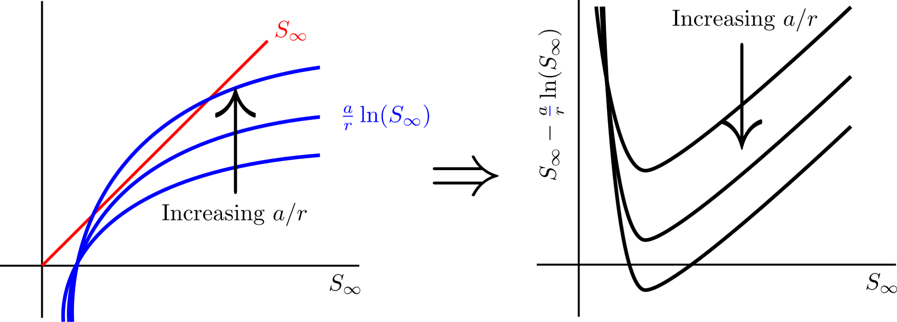
Sketching the lines \(S_\infty\) and \(a\ln(S_\infty)/r\) allows us to sketch \(S_\infty-a\ln(S_\infty)/r\).
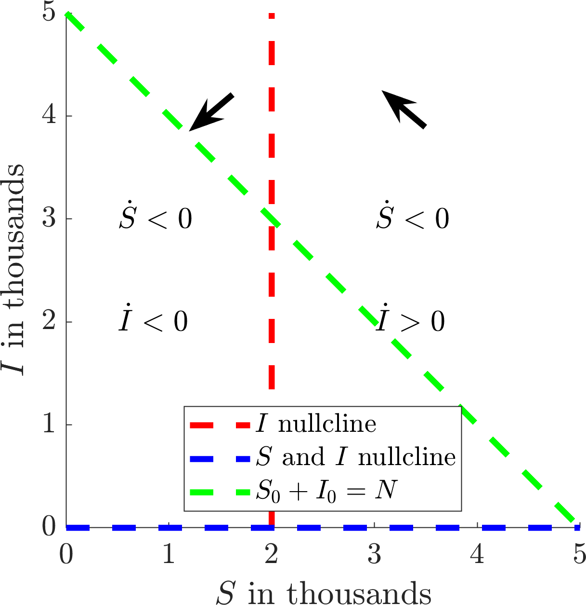
(a)
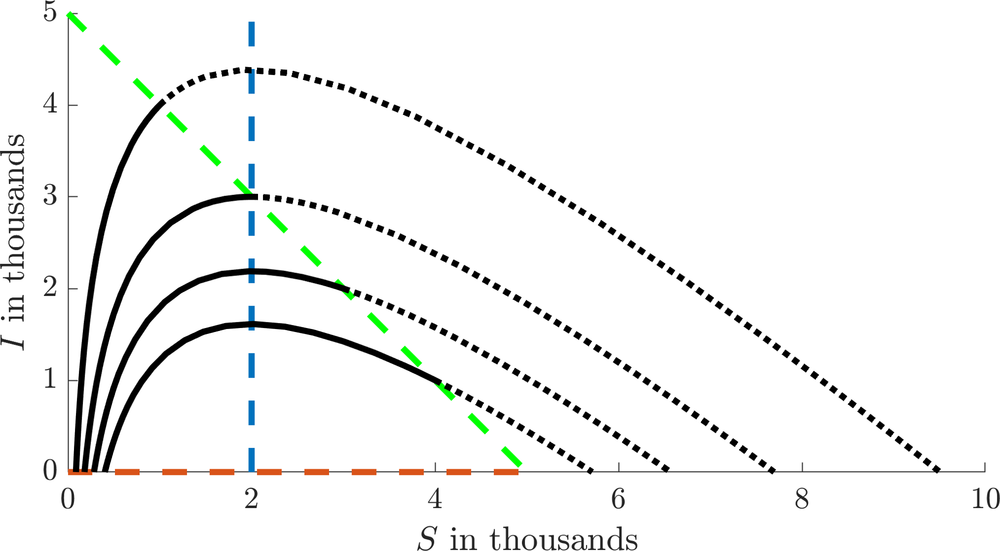
(b)
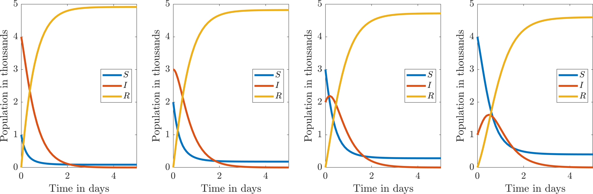
(c)
Various methods for viewing the dynamics of the SIR system, equations (3.15)–(3.17) with \(r=1/1000\)/(person\(\times\)day) and \(a=2\)/day. The \((S,I)\) phase plane schematic is shown in (a) and is illustrated with trajectories in (b). All initial conditions are on the green dashed line and, thus, the solid lines in (b) are the forward time trajectories, whilst the dashed lines are the backward time trajectories. The four figures in (c) illustrate the \((S,I,R)\) populations of each trajectory in the (b) phase plane. The susceptible (infected) initial condition increases (decreases) left to right.
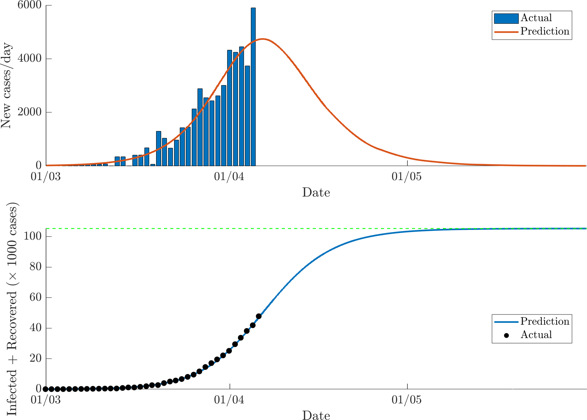
Fitting the SIR model to the UK data of new cases from the 2020 COVID-19 pandemic between the 22nd January and 5th April. The top image shows the raw data as a bar chart. The bottom fits \(I+R\) (the line) to the cumulative sum of the top data (circles). This provides estimates for the SIR parameters, which are then used to fit the prediction to the top image.
3.2 Discrete modelling
ODEs are one method by which we can model populations. Critically, one of the main assumptions is that the population is dynamically changing in continuous time. This implies that there is a continuous overlap of generations. However, many species have little to no overlap between successive generations and so population growth is in discrete steps.
For example a species of cicada known as the Magicicada neotredecim spends almost the full length of its life underground. In the spring of their 13th year the cicadas all appear synchronously and in tremendous numbers. The cicadas develop, mate and die, such that within two months of the original emergence, their life-cycle is complete and the juvenile insects stay underground for another 13 years.
In this case, it would be pointless tracking the population in continuous time. Instead, all we would want to know is how the population at the current time depends on the population 13 years ago. Namely, we would want to construct a function \(f\), such that
In the models we discuss in this chapter we have scaled the time-step to be 1. Models must thus relate the population at time \(t+1\), denoted by \(N_{t+1}\), in terms of the population \(N_t\) at time \(t\). This leads us to study difference equations, or discrete models, of the form
where \(f(N_t)\) is, in general, a nonlinear function of \(N_t\). Such equations are usually impossible to solve analytically but again we can extract a considerable amount of information about the population dynamics without an analytical solution.
Example 3.2.12: A simple discrete population evolution
Consider
Because equation (3.42) is linear we can actually provide a solution in closed form. Specifically, we simply iterate the equation back until \(t=0\), i.e.
Thus
Further, we note that if \(r\geq 0\) the trajectories are monotonic, whereas the trajectories oscillate if \(r<0\), because \(r^n\) flips between positive and negative as \(n\) consecutively increases.
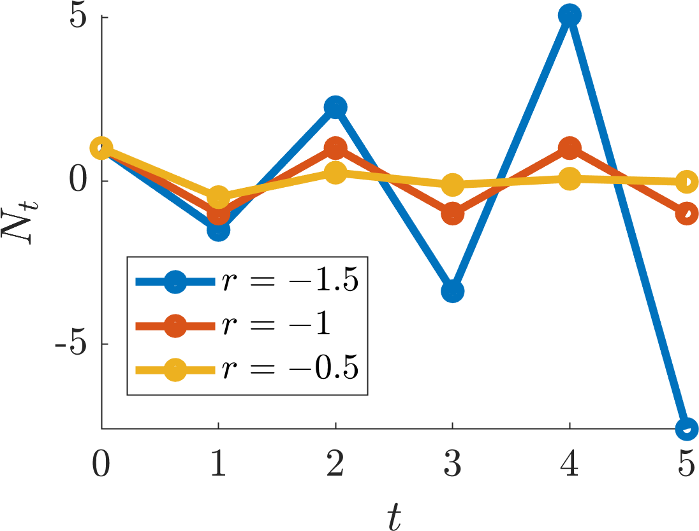
(a)
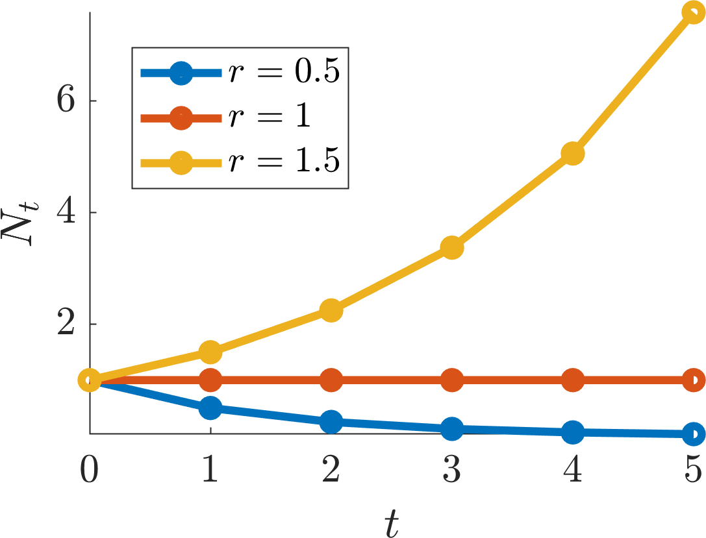
(b)
Plotting the solution of equation (3.42) with varying values of \(r\). The negative values of \(r\) are shown in (a), whilst the positive values are shown in (b).
Definition 14
A steady state \(N^*\) of a discrete population model satisfies
Such points are also called fixed points, stationary points, or equilibrium points. They are analogous to ODE steady states.
As you might expect, if we have a steady state then we also would like to know if it is stable or not. Namely, similar to ODEs, does a small perturbation away from \(N^*\) decay to zero, or does it grow?
Before we answer this question we gain more insight into these equations through plotting their dynamics using a process called cobwebbing.
3.2.1 Cobwebbing
The dynamic evolution of \(N_t\) of the general difference equation (3.41) can be obtained graphically through the following algorithm.
Create a set of Cartesian axes with \(N_t\) along the \(x\)-axis and \(N_{t+1}\) along the \(y\)-axis.
Draw the diagonal line \(N_t=N_{t+1}\) and sketch the function \(f\), where \(N_{t+1}=f(N_t)\).
Mark \(N_0\) on the \(N_t\) axis. The point \(N_1\) is then given by moving vertically until we intersect the \(f\) curve. Specifically, this is the point \(N_1=f(N_0)\).
From the point \(f(N_0)\) we move horizontally until we intersect the line \(N_{t+1} = N_t\), which projects us onto the \(N_t\)-axis at \(N_1\).
The process is repeated from line 3.2.1 until we can predict the future dynamics of the cobweb map.
Critically, not only will this method provide a quick method of plotting the dynamics of a population equation, it also provides a means of visualising the steady states. Explicitly, the steady states are where the \(N_{t+1}=f(N_t)\) curve intersects the line \(N_{t+1} = N_t\).
Example 3.2.13: Cobwebbing the discrete logistic equation
For a generalisation of logistic growth, consider
where \(0<n_0<1\). Apply the cobwebbing method to equation (3.46) for different values of \(r\). What happens?
We note a number of features of equation (3.46), which is cobwebbed in Figure 3.10:
If \(n_0>1\) the second iterate goes negative, thus, the model may not be useful for modelling populations in such conditions.
The steady states of equation (3.46) are \(N^*=0\) and \(1-1/r\).
\(N^*=1-1/r>0\) only makes sense when \(r>1\).
The dynamics of the trajectories depend on \(r\). Namely, Figure 3.10(a) demonstrates that \(N^*=0\) can be stable (\(r<1\)), or unstable (\(r>1\)).
Further, considering the top row of Figure 3.10(a) from left to right shows that \(N^*=1-1/r\) can not exist, be stable, or be unstable, respectively.
In the case that \(r=3\), although both steady states are unstable, we have an oscillatory state.
If \(r\) is pushed higher we can get chaotic trajectories, as seen in Figure 3.10(b).
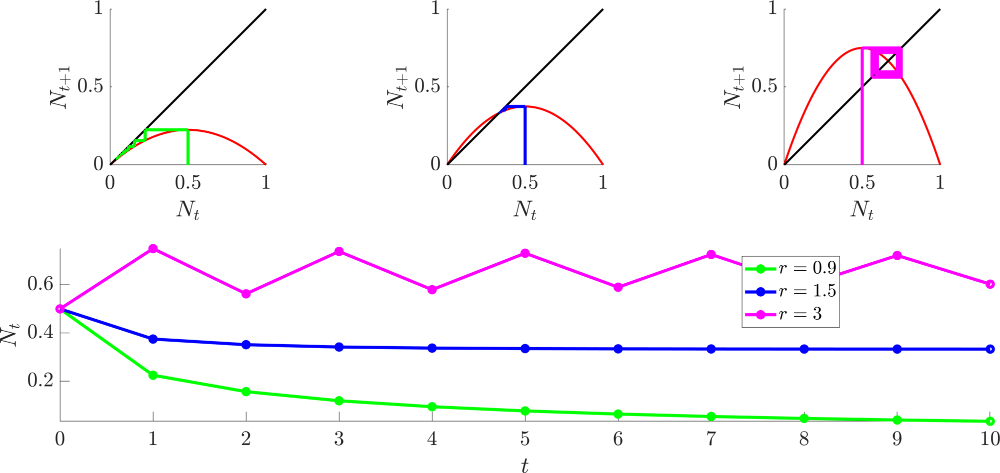
(a)
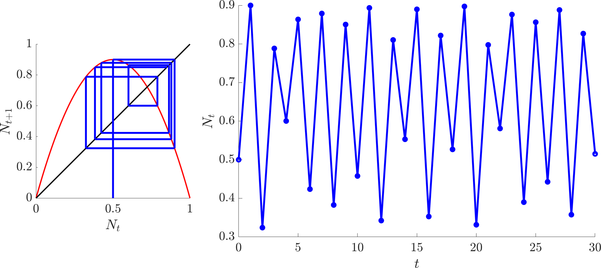
(b)
Multiple cases of the discrete logistic equation for different values of \(r\). (a) Top row, cobweb diagrams with \(r=0.9, 1.5\) and 3, left to right, respectively. The accompanying trajectories are plotted in the bottom image. (b) An example of chaotic dynamics when \(r=3.6\). Left, cobweb diagram. Right, trajectory..
3.2.2 Stability of discrete equations
Similar to continuous systems, finding steady states is only one half of the story. We would like to know whether a steady state is stable or not.
Definition 15
A steady state, \(N^*\), of \(N_{t+1}=f(N_t)\) is stable if \(\forall \epsilon>0\) \(\exists \delta, T>0\) such that whenever \(|N_t-N^*|<\delta\) then \(|N_t-N^*|<\epsilon\) \(\forall t>T\). Otherwise the state is unstable.
Similar to the continuous system, the proof behind the criterion for stability depends upon linearising the system. Namely, we expand the system near a steady state and ask whether a small perturbation will grow, or decay.
Theorem 3.2.1
Suppose \(N^*\) is a steady state of the discrete equation
and assume that \(f'(N^*)\neq 0\). \(N^*\) is stable if \(|f'(N^*)|<1\) and unstable if \(|f'(N^*)|>1\). Further, near \(N^*\), in either case of stability, the trajectories are monotonic if \(f'(N^*)>0\) and oscillatory if \(f'(N^*)<0\).
Proof
Since \(N^*\) is a steady state, consider the trajectory of \(N_t=N^*+\epsilon_t\), where \(0\leq|\epsilon_0|\ll 1\). Substituting \(N_t\) into equation (3.47) we generate
Expanding \(f\) around \(\epsilon_t\) gives
and we note that \(N^*=f(N^*)\), by definition. Combining equations (3.48) and (3.49) gives
Thus, upon simplifying, the perturbation is governed, approximately, by
By considering example 3.2.12 the proof is complete. Explicitly, the size of the perturbation, \(|\epsilon_t|\), grows if \(|f'(N^*)|>1\), meaning that \(N^*\) is unstable. Alternatively, \(|\epsilon_t|\), shrinks if \(|f'(N^*)|<1\), meaning that \(N^*\) is stable. Equally, the trajectories are monotonic (oscillate) in the case that \(f'(N^*)>0\) (\(f'(N^*)<0\)). Note that this is only true in the \(\epsilon\) expansion around the steady state.
Example 3.2.14: Discrete logistic equation revisited
As noted in example 3.2.13 the steady states of the discrete logistic equation are \(N^*=0\) and \(1-1/r\). Suppose we only consider the case when \(r>0\). Characterise the linear stability of the two steady states.
As stated in Theorem 3.2.1 we need to consider the derivative of \(f(N)=rN(1-N)\) at the steady states. Specifically, \(f'(N)=r-2rN\), thus, \(f'(0)=r\) and \(f'(1-1/r)=2-r\). Hence, the steady state \(N^*=0\) always exists, but is only stable for \(-1<r<1\). Since \(r>0\) by restriction we have that \(N^*=0\) is stable for \(0<r<1\) and unstable when \(r>1\).
\(N^*=1-1/r\) only exists when \(r\geq 1\) and is stable only when \(|2-r|<1\),
Combining all these inequalities, we see that \(N^*=1-1/r\) exists and is stable for \(1<r<3\) and is unstable when \(r>3\). All of this information can be illustrated in a bifurcation diagram, as seen in Figure 3.11.
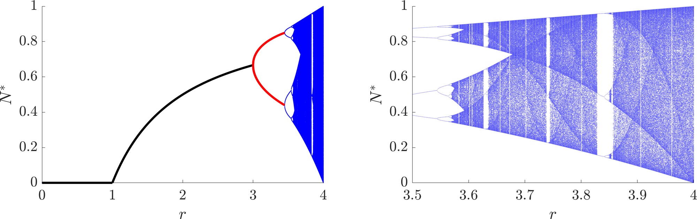
Bifurcation diagram of the discrete logistic equation (3.46). On the left we see the derived regions of stability for \(N^*=0\) and \(1-1/r\) (black line) from example 3.2.14. In example 3.2.15 we will also derive the values and region of stability of the period 2 oscillatory states (red line). However, the derivation of the activity in the blue region is outside the scope of the course, although we can simulate it easily. The right image shows a magnification of the region \(3.5<r<4\), which illustrates that the discrete logistic system can produce a chaotic trajectory.
3.2.3 Oscillatory states in discrete equations
Definition 16
We define the \(p^{th}\) iterate of a map to be the \(p\)th time step. Namely
Definition 17
A state, \(N^*\), has an oscillatory period \(p\) if \(p\) is the smallest integer such that \(N^*=f^p(N^*)\).
Theorem 3.2.2
Suppose \(N_{t+1}=f(N_t)\) has an oscillatory point, \(N^{1*}\), of period \(p\). Then there are also \(p-1\) distinct points that have oscillatory period \(p\).
Proof
Consider the points \(N^{1*}, N^{2*}=f(N^{1*}),N^{3*}=f(N^{2*})=f^2(N^{1*}),\dots,N^{p*}=f(N^{(p-1)*})=f^{(p-1)}(N^{1*})\). By assumption \(N^{1*}=f(N^{p*})\) and by definition
for all \(1\leq i\leq p\). Thus, \(N^{i*}\) does evaluate to itself after \(p\) iterations. Finally, we have to show that \(f^q(N^{i*})\neq N^{i*}\) for \(q<p\). For a contradiction suppose that for some \(1<i\leq p-1\) there does exist \(q<p\) such that \(f^q(N^{i*})=N^{i*}\). Then
but
and
However, by definition \(f^{q}(N^{1*})\neq N^{1*}\) for \(q<p\). Hence, by contradiction the proof is complete.
Definition 18
The orbit of an oscillatory point, \(N^{1*}\) with period \(p\), of a map \(f\), is the set of points \(\{N^{1*}, N^{2*}=f(N^{1*}),N^{3*}=f(N^{2*})=f^2(N^{1*}),\dots,N^{p*}=f(N^{(p-1)*})=f^{(p-1)}(N^{1*})\}\).
As seen in Figures 3.10(a) and 3.11, when \(r\) increases past 3 there is no longer a single steady state. Rather the system undergoes a bifurcation to an oscillatory trajectory of period 2. Further, Figure 3.11 shows that around \(r\approx 3.5\) the system bifurcates again into a period 4 oscillation. As \(r\) increases further a cascade of bifurcations happens leading to states with higher periods of oscillations, demonstrating that the discrete logistic system can produce chaotic trajectories.
As you might expect, understanding the full chaotic region is extremely complicated. However, we can move beyond just the steady states to consider the simple oscillatory states. For example, suppose a system has a period 2 oscillation, i.e. there are two (non-equal) states, \(N^*_1\) and \(N^*_2\), such that \(N^*_1=f(N^*_2)\) and \(N_2^*=f(N_1^*)\). Each state is then a steady state of \(f^2\), i.e.
Theorem 3.2.3
If \(N^*\) is an oscillatory state of \(f\), of period \(p\), it is a steady state of \(f^p\).
Proof
Practically by definition.
Theorem 3.2.4
Suppose \(N^*\) is an oscillatory state of period \(m\), where \(m\) is a factor of \(p\) then \(N^*\) is also a steady state of \(f^p\).
Proof
By definition \(N^*=f^m(N^*)\) and by assumption there exists a positive integer \(n\) such that \(p=mn\). Hence
From theorems 3.2.3 and 3.2.4 we have a way of finding periodic states. From stability theorem 3.2.1 we also have a way of characterising the stability of a period \(p\) oscillation, namely, \(x_p\) is a stable period \(p\) oscillation of the map \(f\) if \(x_p\) is a stable state of the map \(f^p\). Explicitly,
However, calculating \(\mathrm{d}f^p (x_p)/\mathrm{d}x\) often requires difficult algebraic manipulations. Thankfully, the following theorem simplifies the issue.
Theorem 3.2.5
Let \(x^{1*}\) be a period \(p\) oscillation of \(f\). Then
where \(x^{i*}=f^{i-1}(x^{1p})\).
Proof
By the chain rule if \(g(x)\) and \(h(x)\) are two well-behaved functions with derivatives \(g'(x)\) and \(h'(x)\), respectively, then
Applying this iteratively to \(f^{p}(x)=f(f(\dots f(x)\dots ))\) we derive
Evaluating equation (3.61) at \(x=x^{1*}\) provides the required result.
Thus, instead of evaluating the derivative of the \(p\)th iteration map we need only calculate the derivative of the original map and evaluate it at all period \(p\) steady states. This evaluation may not be easier, but it should be easier than evaluating the derivative of the \(p\)th iteration map. This also then leads to the following observation.
Corollary 3.2.6
The stability of all periodic points in the same orbit is the same, namely,
Proof
By considering equation (3.61) and noting that \(f^i(x^{j*})=f(x^{(i+j)*})\) we can see the right-hand side of \(\mathrm{d}f^p(x^{j*})/\mathrm{d}x\) will just be a permutation of the terms of \(\mathrm{d}f^p(x^{1*})/\mathrm{d}x\). Thus, the product will be the same.
Example 3.2.15: Period 2 oscillations in the discrete logistic equation
Derive the period two oscillation states specifying their existence and stability dependence on \(r\).
Using the insights from the above discussion and theorems to extract the period 2 oscillatory states we need to consider the second iteration of the discrete logistic equation. Namely, if
then we need to consider the steady states of \(f^2\). Since \(f\) is a quadratic then \(f^2\) will be a quartic. These are difficult to solve. However, by Theorem 3.2.4 we know two of the roots. Namely, the steady states of \(f\) (\(N^*=0, 1-1/r\)) will also be steady states of \(f^2\). Since we know two roots, we can factor these out of the quartic, leaving only a quadratic needing to be factored, which we can easily work with.
Thus, we need to consider the steady states of \(f^2\),
Rearranging equation (3.63) and factoring the \(N^*=0\) root gives
As mentioned, we further know that \(1-1/r\) is a root, meaning that there are some values of \(a,b\) and \(c\) such that equation (3.64) has the following form
Comparing equations (3.64) and (3.66) we immediately see that
and
Substituting equations (3.67) and (3.69) into equation (3.65) we generate
Thus, the period two steady states satisfy
Critically, we must have \(1-4/(r+1)>0\) for the states to be valid i.e. \(r>3\). Hence, these states appear as \(N^*=1-1/r\) destabilises. But are they stable? To answer this question we must consider the size of
The above derivative could be calculated, but we will use Theorem 3.2.5. Namely
We have already calculated \(f'=r-2rN\) in example 3.2.14, so,
For stability we need \(|{f^2}'(N_t)|<1\) and we note that \(r>3\) for the roots to exist. Hence,
Considering the sign of the quadratic we must have \(r>3\), or \(r<-1\), thus, \(r>3\). Further, we must also satisfy
Combining this information with the previous inequality, the period 2 oscillations (3.72) are stable for \(r\in[3,1+\sqrt{6}]\). Figure 3.11 illustrates the states (3.72) and the region of stability in red.
3.3 Check list
By the end of this chapter you should be able to:
reproduce all definitions;
state and prove all theorems, where proofs are given;
construct ODE models from descriptions;
manipulate and investigate ODE models using combinations of methods from Chapter 2 to solve specific questions;
generalise presented results to variations of the SIR model;
derive steady states and oscillatory states from discrete time population equations;
use cobwebbing to suggest the stability of steady states from discrete time population equations;
characterise the stability of steady states and oscillatory states from time discrete population equations;
4 Spatial systems
So far we have considered biological phenomena with negligible spatial variation. Many times, however, space is very important. For example, in ecological contexts you do not normally find predator and prey living together; animals often have to leave their home roosts to find food, wolves, for example.
An alternative example can be seen in the interactions of grey and red squirrels in the UK. Here, one species invades another’s territory. Modelling helps us understand how the populations will evolve, e.g. will one population win out, or will the populations eventually separate the land and coexist? Equally, the modelling can inform us of how to reduce the invasive risk of the population.
There are two main forms of motion we are going to consider, random motion and directed motion.
Definition 19
Diffusion is the random movement of system agents. (see Figure 4.1(a))
Definition 20
Taxis is the directed movement of system agents. (see Figure 4.1(c))
Note there are many forms of taxis, specifying what is causing the directional motion, for example:
is when the agents move up (chemoattractant) or down (chemorepellent) a chemical gradient.
is movement induced by electric fields.
is movement that responds to gravity.
(a)
(b)
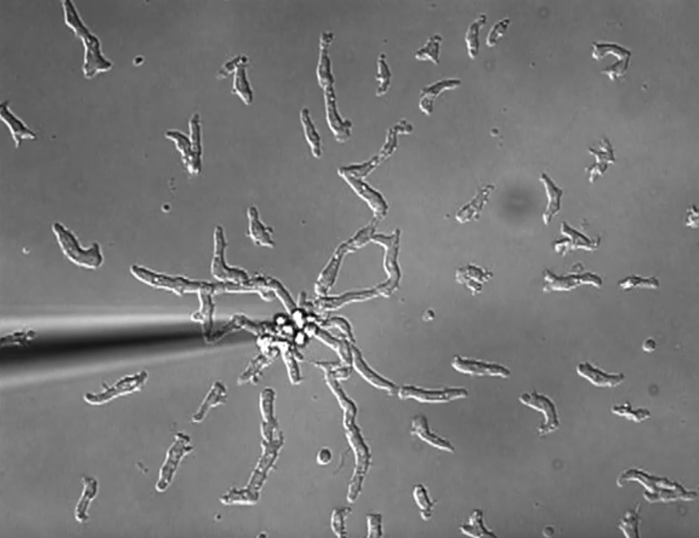
(c)
Illustrating (a) diffusion, (b) chemotaxis and (c) actual chemotaxis. In (a), as long as the water is not stirred, or heated, the ink will undergo diffusion. The ink has no directed motion; the water and ink particles bump together causing the ink to spread out to a homogeneous state. In (c) a slime mould cell (dictyostelium) is attracted to a pipette full of cyclic adenosine monophosphate (cAMP).
4.1 Deriving the diffusion equation
We will first derive the equation behind diffusion, then taxis. Further, in each case, we consider motion in the infinite domain case and then add boundaries, as these are minor complications that modify the main derivation.
All derivations follow the process of discretising a continuum population. The separation between the discretised points is then taken to zero in an appropriate limit leading to the desired equation.
Theorem 4.1.1
The model for random motion of a population \(u\) on an infinite line is
where \(D\) is defined to be the diffusion coefficient, a positive constant that specifies the rate at which the population spreads out.
Note that since there are no boundaries we do not need to consider boundary conditions. However, an initial condition needs to be supplied to close the model fully. See Figure 4.4(a) for an illustrated example.
Proof
Consider an infinite one-dimensional interval on which a population, \(u(x,t)\), is diffusing. Consider a discretised form of \(u\) that is evaluated at points \(x_i\), where \(i\) is an integer label and \(x_{i+1}=x_i+\Delta x\). For simplicity, \(u(x_i,t)=u_i\). The population at each point is able to transition to their neighbours at a rate proportional to their concentration, with proportionality constant \(d=D/\Delta x^2\). In terms of reaction terminology this is
Due to the symmetry of the problem we can isolate just the \(i^{th}\) population. Namely, using the Law of Mass Action, the accompanying infinite set of coupled ODEs would be
where we note that we are using a partial derivative as \(u\) is a function of multiple variables.
We now use Taylor’s theorem to expand in \(\Delta x\),
where we expand to second order, rather than the normal first order. Substituting equations (4.5) and (4.4) into equation (4.3) we generate
Finally, we substitute \(d=D/\Delta x^2\) and let \(\Delta\rightarrow0\), at which point we stop dealing with a discretised line and consider the continuum. Thus, the diffusion equation is
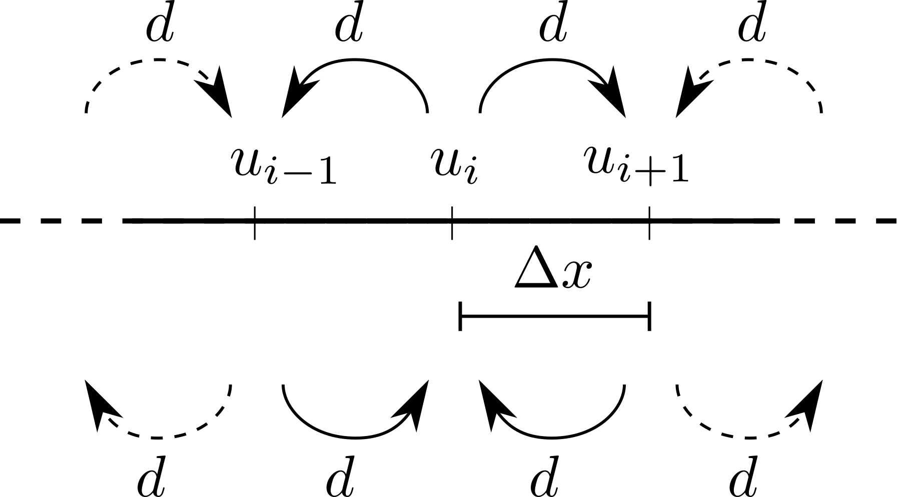
Diffusion schematic.
We now consider boundary conditions. Specifically, there are three main types: Dirichlet, Neumann and Robin (all named after dead mathematicians).
Definition 21
Dirichlet boundary conditions fix the value of the variable on the boundary to be a constant.
For example, \(u(0,t)=\alpha\) and \(u(L,t)=\beta\), for \(\alpha,\beta\geq0\) are perfectly valid Dirichlet boundary conditions for the one-dimensional diffusion equation. See Figure 4.4(c) for an illustrated example.
Definition 22
Neumann boundary conditions fix the value of the variable’s derivative on the boundary to be a constant.
For example,
are perfectly valid Neumann boundary conditions for the one-dimensional diffusion equation.
Definition 23
Robin boundary conditions fix a linear combination of the variable’s value and derivative on the boundary to be a constant.
For example,
are perfectly valid Robin boundary conditions for the one-dimensional diffusion equation.
Although there are infinitely more we will generally only consider the first two. Equally, a system is able to have different boundary conditions on each boundary.
Critically, the Neumann boundary conditions model the flux in, and out, of the domain. We will now show that when we consider an insulated domain (in which no substance enters or leaves through the boundary) then we are considering the specific case of Neumann boundary conditions in which \(\alpha=\beta=0\) in equation (4.8). These are specifically called zero-flux, or reflective boundary conditions.
Theorem 4.1.2
Consider a diffusing population in a finite one-dimensional domain, \([0,L]\). Further, suppose this substance is unable to leave the domain when zero-flux boundary conditions are applied. We will show that the mathematical model of this situation is
supplemented with the boundary conditions
As above, an initial condition needs to be supplied to close the model fully. See Figure 4.4(b) for an illustrated example.
Proof
We consider a similar set-up to Theorem 4.1.1. Namely, we consider a discretised domain of \(N+1\) points \(\Delta x=L/N\) apart such that population \(u\) evaluated at point \(x_i\) is \(u_i=u(x_i,t)=u(i\Delta x,t)\). However, the domain is now finite, so we explicitly specify what happens at the first and last points, \(x_0=0\) and \(x_N=L\) (see Figure 4.3). The reaction terms will be
which (using the Law of Mass Action) will provide an ODE system of the form
As before we use Taylor’s series (see equations (4.4) and (4.5)) to generate
where we note we only have to go to first order to derive equations (4.13) and (4.14). Finally, rearranging equations (4.13) and (4.14) and taking \(\Delta x\rightarrow 0\) and \(N\rightarrow \infty\) such that \(N\Delta x=L\) stays constant, allows us to derive
as required.
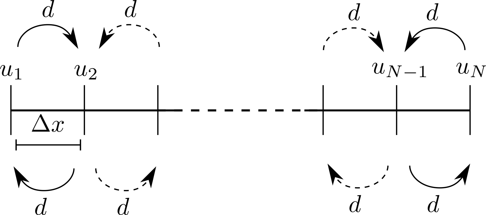
Diffusion schematic within an insulated domain.
Theorem 4.1.3
Consider a one-dimensional diffusing population. In the case of zero-flux boundary conditions, the population total does not change.
Proof
Intuitively, this makes sense as the population is simply spreading out over the domain. No population is being created or destroyed. Nor is any allowed to leave the domain in the finite interval case. Thus, we would hope that this were true.
To show that the proposition is true we simply integrate the population over space and demonstrate that its time derivative is zero. Hence, the population remains constant over time. Namely, we begin by integrating the diffusion equation between \(L_0\) and \(L\infty\),
The time derivative and spatial integration commute and we can directly integrate the right-hand side of equation (4.15). We, thus, derive
where the left-hand side of equation (4.16) is the time derivative of the total amount of \(u\) in the domain
and the derivatives are explicitly zero in the zero-flux case (see equation (4.11)).
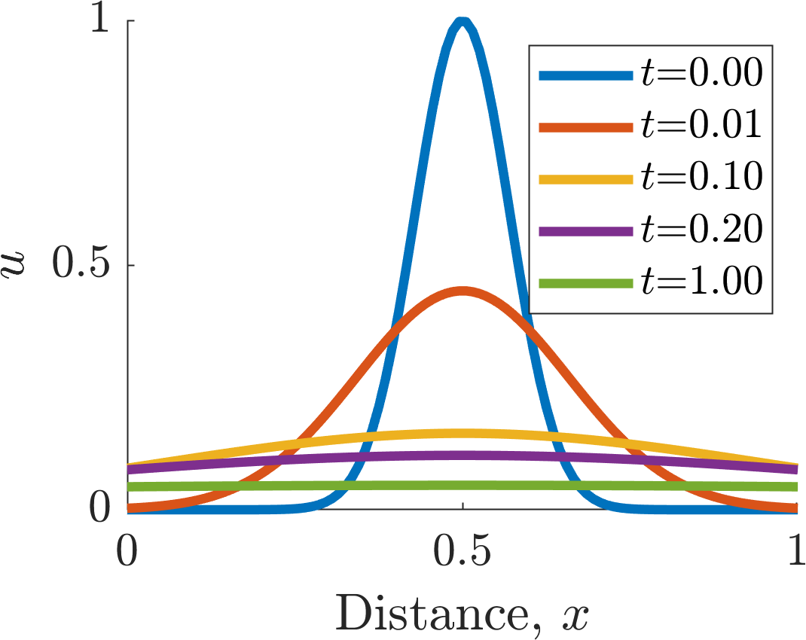
(a)
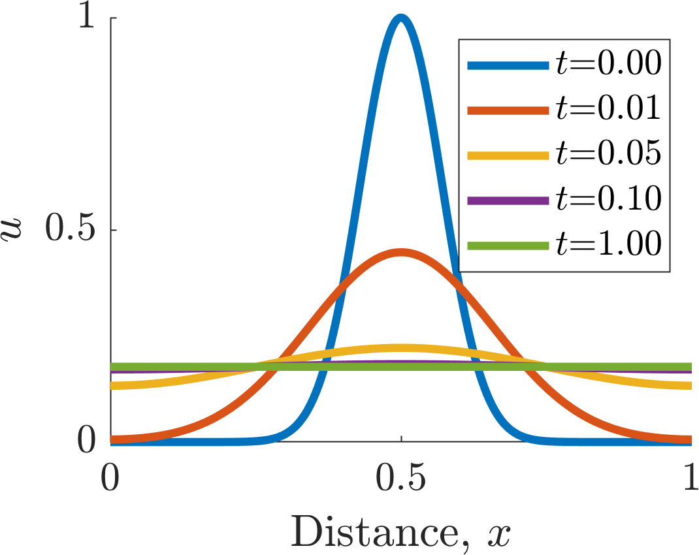
(b)
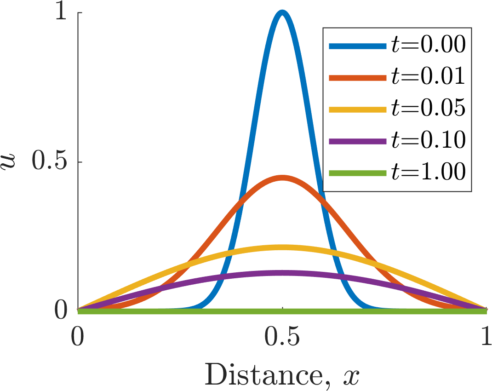
(c)
Illustrating diffusion on (a) an infinite domain, (b) a finite domain with zero-flux boundaries and (c) a finite domain with zero-Dirichlet boundaries. Parameter value \(D=1\) in all cases. The initial condition in all cases was \(u(x,0) = \exp(-((x-1/2)10)^2)\).
4.2 Deriving the taxis equation
In the last section we saw that the diffusion equation required the second spatial derivative. The derivation of the taxis equations follows exactly the same argument, but we will see that the taxis equation only requires the first spatial derivative. This is simpler to derive, but we started with the more complicated equation because we will be using diffusion more often and it was important to get ourselves used to the derivation argument.
Theorem 4.2.1
Consider a one-dimensional domain filled with a population \(u\) that is subject to two different spatially dependent forces. One force attracts the population to the left, causing a flux of movement at a rate, \(d_l(x)=D_l(x)/\Delta x\), whilst the other attracts the population to the right, causing a flux of movement at a rate \(d_r(x)=D_r(x)/\Delta x\). The equation controlling the population’s evolution is then
Since we are on an infinite domain we simply have to assume that the solution stays finite and initial conditions are required to close the solution.
Proof
Consider the standard set-up. Namely, consider a discretised population \(u\) where the points are separated by \(\Delta x\) and each contains a population (see Figure 4.5). The reaction terms will be
which (using the Law of Mass Action) will provide an ODE system of the form
As before we use Taylor’s series. Although we only need to expand to first order, we need to expand both the movement rates and the positions,
Substituting equations (4.20)–(4.23) into equation (4.19) gives
Upon taking \(\Delta x\rightarrow 0\) we achieve the stated result.
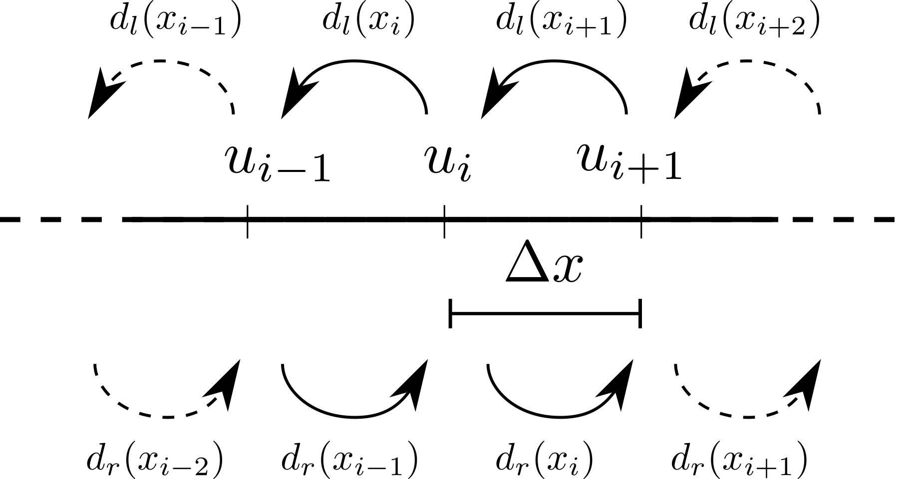
Taxis schematic.
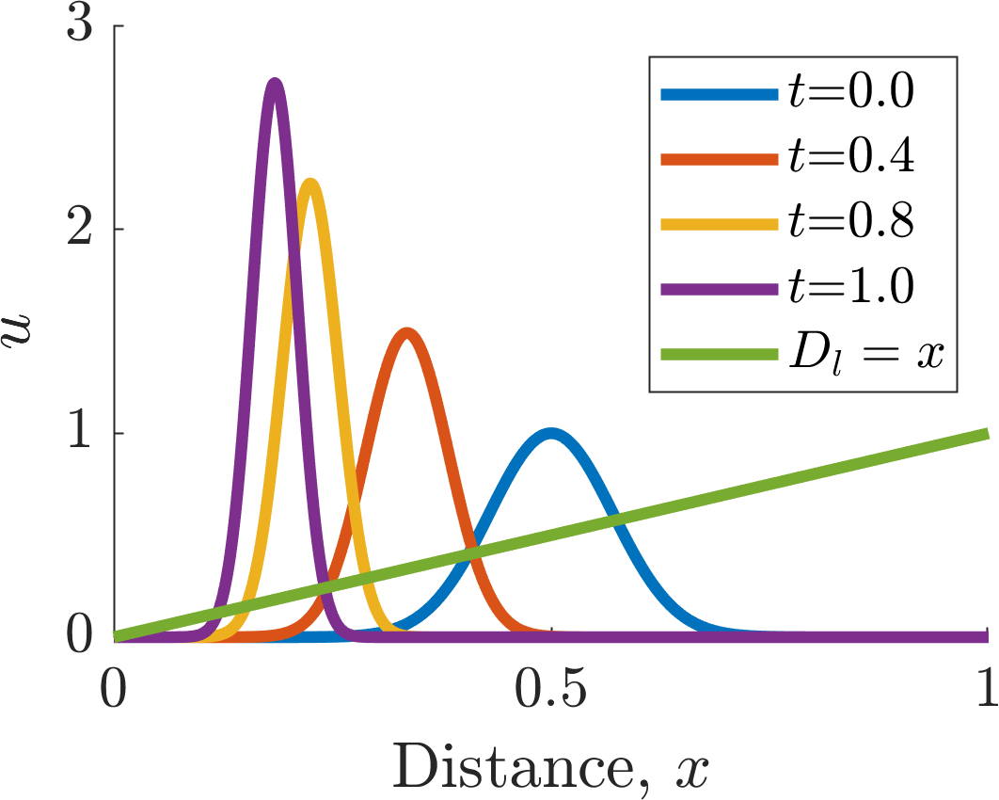
Illustrating taxis on a finite domain with zero-flux boundary conditions with \(D_l=x\) and initial condition \(u(x,0)=\exp(-((x-0.5)10)^2)\).
4.3 Travelling waves
In previous chapters we have developed a theoretical framework of interacting species. Such interactions can simply be added to models of spatial motion. Namely, if \(f(u,v)\) and \(g(u,v)\) are interaction kinetics for populations \(u\) and \(v\) then
would be a one-dimensional spatial extension of the reaction kinetics, assuming that populations \(u\) and \(v\) diffused with rates \(D_u\) and \(D_v\), respectively.
However, before we consider the possibilities of two interacting populations, we consider the simple example of combining logistic growth and diffusion in one spatial dimension. Critically we are going to look at conditions under which Fisher waves can form.
Definition 24
A Fisher wave is a specific form of travelling wave solution that translates in space at a constant speed over time, without changing its shape.
4.3.1 Fisher’s equation
Example 4.3.16: Fisher waves in Fisher’s Equation
Consider the following system
on an infinite domain, subject to the following boundary and initial conditions:
where \(u_{\pm \infty}\) are constants to be determined and \(u_0(x)\) is any function satisfying the boundary conditions. This equation is known as Fisher’s equation and it was first proposed to model the spread of an advantageous gene through a population.
We will show that Fisher waves, as defined in definition equation (24), can be supported by equation (4.26). We will be led by our intuition of what we expect the waveform to look like (see Figure 4.7). Namely, from our understanding of the logistic equation any small perturbation to zero leads the population to grow to the carrying capacity. Thus, we expect that large populations will invade small populations until everywhere is at \(u=K\).
We, firstly, need to derive what boundary conditions would be consistent with equation (4.27). Since \(u_{\pm\infty}\) are constant “at infinity” this means the spatial and temporal derivatives are zero at the boundaries. Namely, the values must satisfy
\[\begin{equation*} 0=u_{\pm\infty}\l 1-\frac{u_{\pm\infty}}{K} \r. \tag{4.28}\end{equation*}\]Thus, \(u_{\pm\infty}=0\), or \(K\), meaning that the final solution forms are heavily restricted in what their boundary values can be.
We want the wave-form solution to move with constant speed. This suggests that we convert to using moving wave coordinates, \(z=x-ct\), where \(z\) is the travelling wave coordinate and \(c\) is a constant velocity. Note that we assume without loss of generality that \(c>0\). If \(c<0\) then the wave is simply going in the opposite direction. Critically, we have introduced a new variable and, thus, we must derive conditions on the form \(c\) must take.
Using \(z=x-ct\) the derivatives become
\[\begin{align*} \D{u}{t}=&\D{u}{z}\D{z}{t}+\D{u}{t}\D{t}{t},\\ =&-c\D{u}{z}+\D{u}{t}, \tag{4.29}\end{align*}\]and
\[\begin{align*} \D{u}{x}=&\D{u}{z}\D{z}{x}+\D{u}{x}\D{t}{x},\\ =&\D{u}{z},\\ \implies \DD{u}{x}=&\DD{u}{z}. \tag{4.30}\end{align*}\]Substituting equations (4.29) and (4.30) in equation (4.26) we generate
\[\begin{equation*} \D{u}{t}-c\D{u}{z}=D\DD{u}{z}+ru\l 1-\frac{u}{K} \r. \tag{4.31}\end{equation*}\]Equally, we want the wave to move without it changing its shape. This means that the wave should be stationary in the moving coordinates, i.e. \(\partial u/\partial t=0\). Thus, the travelling wave solution satisfies
\[\begin{equation*} 0=D\frac{\rd^2 u}{\rd z^2}+c\frac{\rd u}{\rd z}+ru\l 1-\frac{u}{K} \r. \tag{4.32}\end{equation*}\]and we choose boundary conditions
\[\begin{equation*} u(-\infty)=K, \quad u(\infty)=0. \tag{4.33}\end{equation*}\]Namely, far ahead of the wave there is no population, whilst behind the wave the population is at carrying capacity.
Using the substitution \(v=\partial u/\partial z\), we now consider equation (4.32) as a system of two first-order ODEs
\[\begin{align*} \frac{\rd u}{\rd z}=&v,\tag{4.34}\\ D\frac{\rd v}{\rd z}=&-cv-ru\l 1-\frac{u}{K} \r. \tag{4.35}\end{align*}\]The steady states of these are \((0,0)\) and \((K,0)\). The Jacobian of the system is
\[\begin{equation*} \bm{J}=\left[ \begin{array}{cc} 0 &1\\ r(2u_s/K-1)/D&-c/D\end{array}\\ \right]. \tag{4.36}\end{equation*}\]The eigenvalues satisfy
\[\begin{equation*} -\lambda\l -\frac{c}{D}-\lambda\r-\frac{r}{D}\l 2\frac{u_s}{K}-1\r =0, \tag{4.37}\end{equation*}\]and, so,
\[\begin{equation*} \lambda_{\pm}=\frac{-c\pm\sqrt{c^2+4rD(2u_s/K-1)}}{2D}, \tag{4.38}\end{equation*}\]where we note that the eigenvalues depend only on the steady state value of \(u\), not \(v\). Evaluating these eigenvalues at the steady states we get
\[\begin{equation*} \lambda_{\pm}(K,0)=\frac{-c\pm\sqrt{c^2+4Dr}}{2},\quad\lambda_{\pm}(0,0)=\frac{-c\pm\sqrt{c^2-4Dr}}{2}. \tag{4.39}\end{equation*}\]Since \(c,r,D>0\) then \(\lambda_{-}(K,0)<0<\lambda_{+}(K,0)\) and, hence, \((K,0)\) is a saddle point. Equally, \(Re(\lambda_{\pm}(0,0))<0\), so \((0,0)\) is a stable point. However, depending on how large \(r\) is it could either be a stable node, or a stable spiral.
However, if \((0,0)\) were a spiral point it would mean that \(u\) would become negative, but \(u\) is a physical population and, so, this cannot happen. Thus, we require \((0,0)\) to be a stable node and, hence, we need \(c^2\geq 4Dr\).
Finally, to show that the wave form is possible we need to show that there is a trajectory linking \((K,0)\) to \((0,0)\). Since \((K,0)\) is unstable and \((0,0)\) is stable, it is suggestive, but we still need to show that it is possible. To do this we construct a trapping region, \(R\), which will contain both critical points. The trajectory will enter \(R\) from \((K,0)\) and will be unable to leave. We then depend on The Poincaré-Bendixson Theorem to tell us what will happen.
Theorem 4.3.1: The Poincaré-Bendixson Theorem
For a system of two first-order ordinary differential equations, consider a closed bounded region, \(R\). Suppose a trajectory, \(\boldsymbol{p}(t)=(u(t),v(t))\), lies entirely within \(R\). Then one of the following is true:
\(\boldsymbol{p}(t)\) is a closed trajectory, e.g. a limit cycle;
\(\boldsymbol{p}(t)\) asymptotically tends to a closed trajectory, e.g. a limit cycle;
\(\boldsymbol{p}(t)\) terminates at a stationary point.
Therefore, if \(R\) does not have a stationary point then there must be a limit cycle. Equally, if \(R\) does not contain a limit cycle then the trajectory must terminate.
Proof
Non-examinable, but, for the interested, see P. Glendinning, Stability, Instability and Chaos: An Introduction to the Theory of Nonlinear Differential Equations.
Using The Poincaré-Bendixson Theorem we will show that \(R\) cannot contain a limit cycle and, thus, the trajectory must terminate at \((0,0)\). This provides us with a waveform solution that links \((K,0)\) to \((0,0)\).
We begin by considering the direction of the trajectory on the line \(v=-cu/(2D)\), for \(0<u<K\),
\[\begin{align*} \frac{\rd v}{\rd u}=&\frac{-cv-ru\l 1-\frac{u}{K}\r }{Dv},\\ =&-\frac{c}{D}-\frac{ru\l 1-\frac{u}{K}\r }{Dv},\\ =&-\frac{c}{D}+\frac{2r\l 1-\frac{u}{K}\r }{c},\\ =&-\frac{c}{D}+\frac{2r}{c}-\frac{2ru}{Kc},\\ <&-\frac{c}{D}+\frac{2r}{c} \textrm{ whenever $0<u<K$}. \tag{4.40}\end{align*}\]For a wave to exist we have shown that \(c^2>4Dr\), or \(c/(2D)>2r/c\). Substituting this into equation (4.40) we get that
\[\begin{align*} \frac{\rd v}{\rd u}<&-\frac{c}{D}+\frac{2r}{c},\\ <&-\frac{c}{D}+\frac{c}{2D},\\ =&-\frac{c}{2D}. \tag{4.41}\end{align*}\]Using this we construct a triangular region, \(R\) such that
\[\begin{equation*} R=\{(u,v): 0\leq u\leq K, -\frac{cu}{2D}<v<0\} \tag{4.42}\end{equation*}\]and consider the \((u,v)\) phase plane (see Figure 4.8). Firstly, we construct the nullclines
\[\begin{align*} v=&0,\tag{4.43}\\ v=&\frac{r}{c}u\l \frac{u}{K}-1\r, \tag{4.44}\end{align*}\](blue lines in Figure 4.8) then we consider the sign of each derivative in the different sectors, and on the nullclines and use these to draw in the directional arrows (black and blue arrows, respectively).
Next, we draw the \(R\) region and consider the direction of the dynamics on each of the boundaries. By the derivation of inequality (4.41) we know that the directional arrows are always steeper than the line \(v=-cu/(2D)\), thus, trajectories inside \(R\) cannot leave via the hypotenuse. For \(v=0\), \(0\leq u\leq K\) we have that \(u'=0\) and \(v'<0\) so, again, the trajectory cannot leave via the horizontal section of \(R\). When \(u=K\) and \(v\leq0\) we have that \(u'<0\) and \(v'>0\), which once again points into \(R\) and, thus, once a trajectory enters \(R\) it cannot escape via the side.
Finally, we know a limit cycle cannot exist in \(R\) as \(u'\leq 0\) at every point in \(R\). However, if the trajectory were to cycle the values must increase, as well as decrease, which is not possible. Thus, by The Poincaré-Bendixson Theorem the trajectory must terminate at a steady state and \((0,0)\) is the only candidate.
Hence, we have demonstrated that a trajectory linking \((K,0)\) to \((0,0)\) is possible. A possible trajectory is shown in green in Figure 4.8.
Note that we have shown a Fisher wave is possible in equation (4.26). We have not shown that it is guaranteed. However, as you might expect, Fisher waves do generically appear in the Fisher equation. Proving this is beyond this course. However, we can simulate equation (4.26) and demonstrate that our assumptions and intuition do hold. Firstly, compare Figure 4.7 and the left subfigure of Figure 4.9. Here, we see that apart from near the boundaries2 the wave does propagate with a constant wave form shape. Equally, by comparing Figure 4.8 and the middle subfigure of Figure 4.9 we can see that the trajectory of the solution of equation (4.26) does follow the \((u,v)\) phase plane of equation (4.32). Finally, Figure 4.9 demonstrates that the wave does travel with a constant rate (away from the boundaries). Critically, our maths provides only the inequality \(c\geq\sqrt{4Dr}=\sqrt{4\times 1\times 4}=4\). Our maths does not predict the general observation that \(c\rightarrow\sqrt{Dr}\).
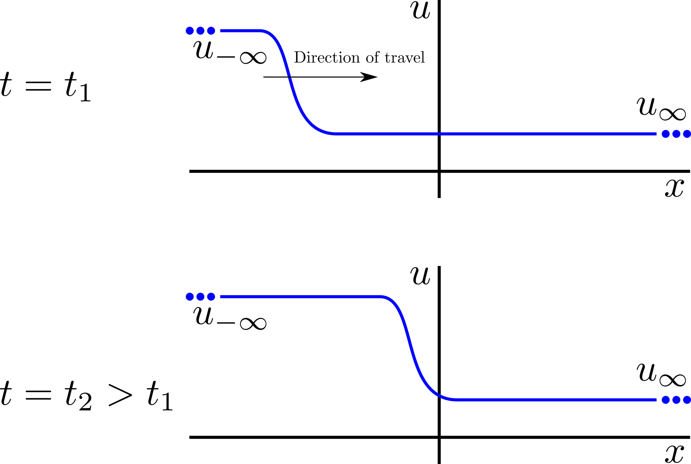
Schematic diagram of what a Fisher wave should look like, to aid our intuition.
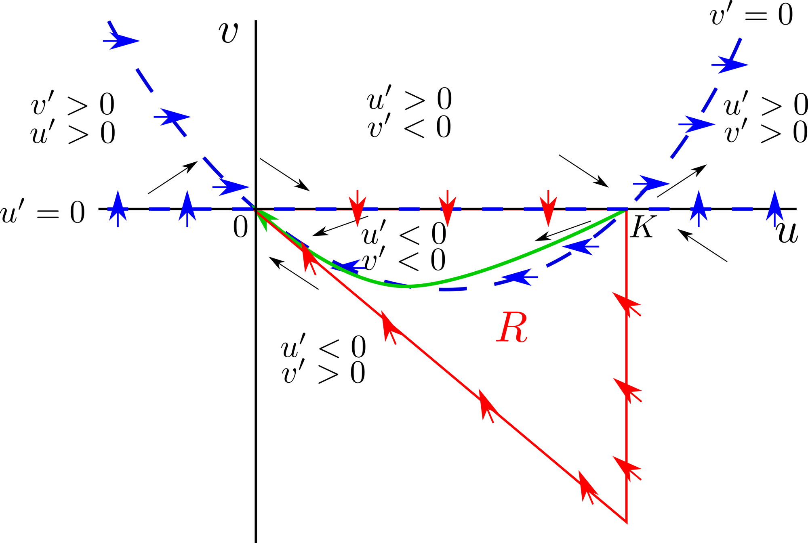
Phase plane of the Fisher equation in moving coordinates, equations (4.34) and (4.35).
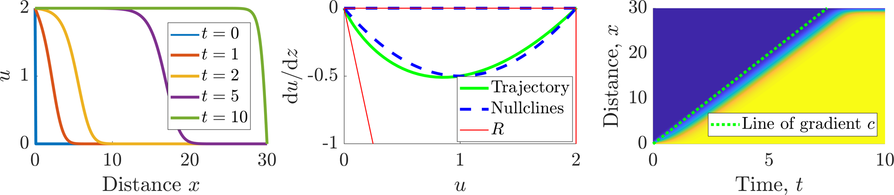
Simulation of Fisher’s equation (4.26) presented in a number of ways. Left: Different time points of the wave profile. Middle: Phase plane with added simulated trajectory. Right: Time-space plot of \(u\). Parameters \(r=4\), \(D=1\) and \(K=2\).
4.4 Check list
By the end of this chapter you should be able to:
reproduce all definitions;
state and prove all theorems, where proofs are given;
derive the taxis and diffusion PDE forms from discretised domains;
derive appropriate boundary conditions from discretised domains;
specify what different boundary conditions mean;
convert PDEs to travelling wave coordinates;
derive conditions under which travelling waves could form.
5 Pattern Formation
Examples of the importance of spatial patterning and structure can be seen just about everywhere in the natural world (see Figure 5.1). Here, we will be concerned with building and analysing models which can generate such patterns. Specifically, we want to see how simplicity can lead to complexity.
Examples of spatial patterning.
Definition 25
Patterns are stable, time-independent, spatially heterogeneous density profiles.
Definition 26
Morphogens are pattern forming agents. They can be proteins, cells, animals, etc.
5.1 French flag patterning
One of the most common mechanisms of pattern creation is that of using cells to read local concentrations of morphogens. If all cells sense the same concentration then they will all differentiate to be the same type of cell. However, if there is a heterogeneous spread of morphogen then we can define thresholds, \(T_1>T_2\) such that cells that sense a morphogen level greater than \(T_1\) will differentiate differently to those that sense a morphogen amount lower than \(T_2\) (see Figure 5.2). The question thus becomes, how does one generate a heterogeneous morphogen profile?
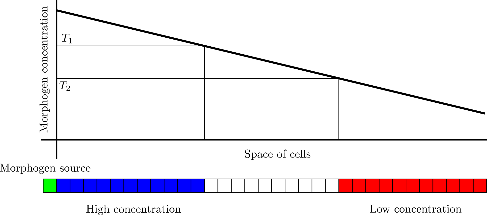
Schematic mechanism of French flag patterning.
One of the simplest methods of producing a heterogeneous morphogen profile is to have heterogeneous production of morphogen. In this section, we will consider isolated regions of production and consider the morphogen patterns that arise. This is known as French flag patterning (see Figure 5.2).
Example 5.1.17: Localised source
Consider a morphogen \(u\) produced at \(x=0\). The morphogen is able to diffuse into the one-dimensional tissue interval \([0,L]\), with diffusion rate \(D\). We assume further that the morphogen cannot leave through the boundary \(x=L\), i.e. it is a reflective boundary. Further, assume that as the morphogen travels it decays at a rate proportional to itself. The mathematical model of this situation is
Note that the initial condition does not satisfy the boundary condition. Thus, we expect there would be a singularity in the solution as \(t\rightarrow 0\). Although we are able to solve this equation using a separable solution, i.e. \(u(x,t)=f(x)g(t)\), and Fourier series we are more interested in the steady state situation. Namely, what is the shape of \(u\) far into the future?
To solve this problem we set \(\partial u/\partial t=0\) and solve the resulting ODE problem
We substitute \(u=A\exp(\lambda x)\) into equations (5.4) and (5.5) where we use \(A\) to satisfy the boundary conditions and derive an auxiliary equation for \(\lambda\),
Thus, there are two consistent values of \(\lambda\). We could now continue to solve the boundary conditions in terms of
however, it is easier to note that
and solve in terms of
The Dirichlet boundary condition at \(x=0\) means that \(A=S\) and the zero-flux condition means that \(B\) must satisfy
We can rearrange equation (5.11) and substitute the form of \(B\) back into equation (5.10) to produce
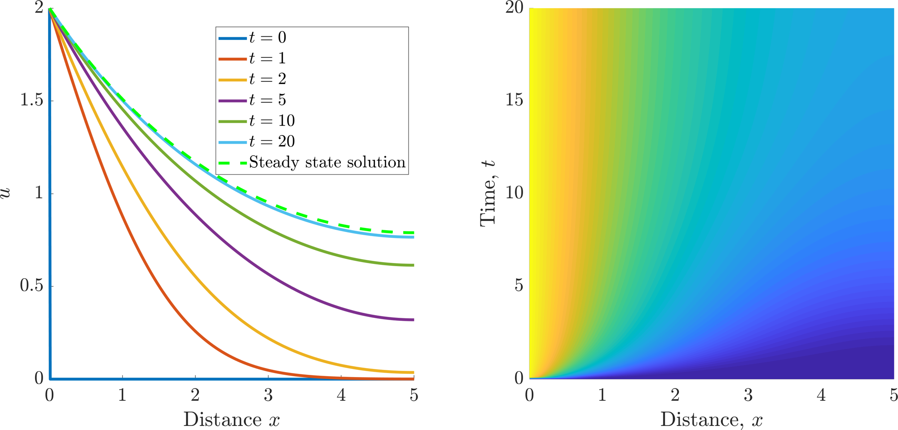
Simulation of equations (5.1) and (5.3). Parameters \(L=5, D=1 ,\gamma=0.1\) and \(S=2\).
5.1.1 Digit specification in the limb bud
One successful application of the French flag model is in understanding chick limb development (see Figure 5.4). Biologists have identified a region, called the “polarising zone”. This small region of cells exists towards the posterior of the chick limb bud and is a localised source of a protein called “Sonic Hedgehog”3, or Shh for short.
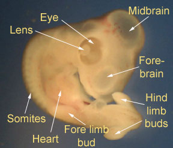
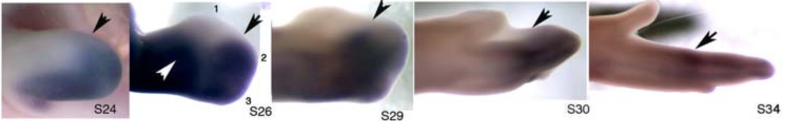
(b) Forelimb bud developing digits. (Vargas, Alexander & Kohlsdorf, Tiana & Fallon, John & Vandenbrooks, John & Wagner, Gunter. (2008). The Evolution of HoxD-11 Expression in the Bird Wing: Insights from Alligator mississippiensis. PloS one. 3. e3325. 10.1371/journal.pone.0003325.)

Digit development in chickens. See subcaptions for details. In (b) the arrows highlight Hox genes. The “S” numbers refer to the stage of development. You do not need to know these. Note each subcaption is a link to its source.
Shh diffuses out from the polarising zone and appears to specify digit formation through a concentration-dependent mechanism. Critically, to really cement the idea that the digits are specified through a French flag mechanism biologists perturbed the limb bud system by adding a second polarising region to the anterior part of the limb bud (see Figure 5.4(c)). The experimental system gave rise to chicks with extra digits, but, more importantly, the digit identities were reversed. Such results are predicted exactly by adding a second boundary source to equation (5.1). Further, if the second source has a reduced strength then, as we would expect from concentration-dependent development the extra development never forms the digits that require the highest levels of Shh.
Of course, this is not the end of the story. More recent work in this area suggests that digit specification is not only dependent on the spatial concentration of Shh that the cells sense, but also on the amount of time for which they are able to sense the concentration. Thus, a high concentration of Shh causes the first digit to develop. However, if we remove the high concentration too early we are left with a digit that is more akin to the final digit that develops.
What you should take from this is that although we have many tools to understand parts of biological development we still do not fully understand the whole. This idea nicely transitions us to the next section, where understanding each mechanism separately does not provide an understanding of the whole.
5.2 The Turing instability
Although the French flag mechanism is able to produce long-range patterns it still requires heterogeneity to be built into the system. We now consider a patterning mechanism that can produce spatial structure from randomness.
In 1952, the logician, computer scientist, code breaker and mathematician Alan Turing proposed a novel mathematical model for pattern formation. He hypothesised that the patterns we see arise due to cells responding to underlying pre-patterns of chemical concentrations. He termed these chemicals morphogens, and showed that spatially heterogeneous patterns could arise in systems in which these chemicals reacted with each other and also underwent diffusion - a phenomenon termed diffusion-driven instability. Making the further assumption that cell fate was determined in a morphogen concentration-dependent manner, the chemical pre-pattern would manifest itself in a pattern composed of spatially heterogeneous cell fates.
5.2.1 Diffusion Driven Instability
Consider a system of two morphogens \((u,v)\) that are able to interact with each other through kinetics \((f(u,v),g(u,v))\) and diffuse throughout a one-dimensional domain, \([0,L]\), with diffusion coefficients \((D_u,D_v)\), respectively. Finally, we assume that the domain has zero-flux boundary conditions. The mathematical system representing this set up is
Definition 27
A homogeneous steady state, \((u_s,v_s)\), is a solution satisfying equations (5.13)–(5.15) assuming no spatial, or temporal, variation, i.e.
Using the above definition a homogeneous steady state satisfies
We will be looking for conditions under which these states evolve into patterns.
Definition 28
A diffusion-driven instability, also referred to as a Turing instability, occurs when a homogeneous steady state, which is stable in the absence of diffusion, becomes unstable when diffusion is present.
The fact that diffusion is going to be responsible for the patterning we are considering is quite surprising. Diffusion, in isolation, disperses a pattern; yet diffusion, in combination with the kinetic terms, can drive a system towards a state with spatial structure.
5.2.1.1 A note on initial conditions
To fully close the system we need to specify initial conditions, \((u(x,0),v(x,0))\); however, these are unimportant and we will be simply assuming that they are random perturbations around the homogeneous steady state.
In a full simulation the final pattern will heavily rely on the initial conditions. Since we are assuming that there is no intelligence behind the pattern construction, these patterns are best suited to understanding individualised patterns, e.g. fingerprints, zebra stripes, etc.
Equally, due to subcritical bifurcations of the patterning structures it could be possible for the initial conditions to dictate whether patterns are seen or not. However, such subtleties are outside of this course.
5.2.1.2 A note on boundary conditions
A homogeneous steady state requires the solution to be uniform across the entire domain. In other words the concentration profile will be flat, or
everywhere. We note that the homogeneous Neumann boundary conditions easily satisfy such requirements. Alternatively, we could use Dirichlet boundary conditions; however, we would have to be careful as to how we fix the boundary values. Namely, we would require that the boundaries are compatible with the homogeneous steady states,
5.2.2 Stability without diffusion
As mentioned in definition 28 the diffusion-driven instability requires us to fulfil two properties. Namely, \((u_s,v_s)\) is stable when diffusion is not considered and unstable when diffusion is considered.
In the absence of diffusion equations (5.13) and (5.14) break down to a system of coupled ODEs, thus, we already know how to derive the stability conditions in this case. Namely, we consider a temporal perturbation to the steady states, i.e.
where \((\epsilon_u,\epsilon_v)\) is a constant vector and we seek conditions under which Re\((\lambda)<0\). Thus, for \((u_s,v_s)\) to be a stable steady state of
we consider the eigenvalues of the accompanying Jacobian,
evaluated at the steady state. The eigenvalues, \(\lambda\), are solutions to the auxiliary equation
From Appendix C we see that for stability we require
Equations (5.25) and (5.26) are the first two Turing conditions
5.2.3 Instability with diffusion
Now that we are including diffusion we require the steady state perturbation to have a spatial component
and that in this case we derive conditions under which \(\lambda>0\). Substituting solution form (5.27) into equations (5.13) and (5.14) gives
where we have suppressed the arguments of \(f\) and \(g\) for brevity. Assuming that the perturbation is initially small we can expand the \(f\) and \(g\) terms. As normal, the constant term disappears because \((u_s,v_s)\) is defined to be a homogeneous steady state, so to first order in \(\epsilon_u\) and \(\epsilon_v\) we have
Cancelling out the \(\exp(\lambda t)\) term and rearranging provides
Searching for inspiration, we let
and note that the matrix on the right of equation (5.30) is just \(\boldsymbol{J}-\lambda \boldsymbol{I}\). Note that we should have expected \(\boldsymbol{J}-\lambda \boldsymbol{I}\) to appear on the right of equation (5.30) because setting the diffusion rates to zero would have landed us back into the case of the previous section, thus, it is a consistency check that we should be able to recover \(\boldsymbol{J}-\lambda\boldsymbol{I}\) from equation (5.30). Upon substituting the new variables into equation (5.30) we derive
At this point inspiration strikes and we compare equation (5.32) with an analogous scalar equation. Specifically, the solution to the scalar equation
is \(E(x)=A\cos\left(\sqrt{k}x\right)+B\sin\left(\sqrt{k}x\right)\), or \(E(x)=A\cosh\left(\sqrt{k}x\right)+B\sinh\left(\sqrt{k}x\right)\), depending on the sign of \(k\) and \(A\) and \(B\) are constants used to satisfy the boundary conditions. Critically, since we want to satisfy zero-flux boundary conditions we require \(k>0\) so we can use the trigonometric form, rather than the hyperbolic functional form.
Thus, by comparison, we suppose
where \((\epsilon_{u1},\epsilon_{u2},\epsilon_{v1},\epsilon_{v2})\) are constants that are used to satisfy the boundary conditions. To satisfy zero-flux boundary conditions we require
for some integer \(n\). To satisfy Dirichlet boundary conditions we require
for some integer \(n\). To satisfy Robin boundary conditions we would not be able to set either term to zero, rather we would need all degrees of freedom.
Substituting equation (5.34) into equation (5.32) provides the following consistency relationship
Once again this is a null-vector equation, thus, to have non-trivial solutions we require
where \(\boldsymbol{M}=-\boldsymbol{D}k^2+\boldsymbol{J}\). Simplifying the system we get
Since we require an instability to occur at least one solution of equation (5.39) has to have positive real part. Critically, from equation (5.25) we know that \(f_u+g_v<0\), further, since \(k^2, D_u\) and \(D_v\) are all positive we must have that
Comparing this with the result in Figure C.1 we see that the only way to get an instability is if \(\det(M)<0\), namely
Since \(\det(M)\) is quadratic in \(k^2\) then it has a negative region if and only if it has two real roots, \(k^2_\pm\), say, (see Figure 5.5). Solving \(\det(M)=0\) provides
for these two roots to be real and positive we require
Inequalities (5.43) and (5.44) are the third and fourth Turing conditions.
Satisfying inequalities (5.43) and (5.44) ensures that there are real values \(k\), such that \(k^2_-<k^2<k^2_+\) for which equation (5.39) has positive real roots. However, we are not quite done. As a final step we must ensure that our solution satisfies the boundary conditions as specified in equation (5.35). Collecting all of these requirements together we generate the full set of Turing conditions,
Schematic diagram of \(\det(\boldsymbol{M})\).
Necessary conditions to produce patterning using equations (5.13) and (5.14)
5.2.4 Corollaries to Turing’s theory
We have derived a number of necessary conditions that allow patterns to occur. However, considering our results a little further we gain a number of further insights.
Our derivation only guarantees that the steady state will be stable without diffusion and unstable with diffusion. It does not guarantee that the instability will stabilise again in a patterned form. The stability of the patterned state is governed by the non-linear terms and their analysis is outside of this course.
By comparing inequalities (5.45) and (5.47) we produce two conclusions. Firstly, \(f_u\) and \(g_v\) must be of opposite signs and, secondly, \(D_v\neq D_u\).
Having concluded that \(f_u\) and \(g_v\) have opposite signs, inequality (5.46) demonstrates that \(f_v\) and \(g_u\) must be of opposite sign too.
The last two insights constrain the sign forms of the Jacobian to the following four types
\[\begin{equation*} \bm{J}=\l\begin{array}{cc} + & +\\ -&- \end{array} \r, \l\begin{array}{cc} - & -\\ +&+ \end{array} \r ,\l\begin{array}{cc} + & -\\ +&- \end{array} \r, \l\begin{array}{cc} - & +\\ -&+ \end{array} \r. \tag{5.50}\end{equation*}\]Note that the second and fourth sign structures can be gained from the first and third, respectively, by swapping the definitions of \(u\) and \(v\).
The first two Jacobian forms are known as cross kinetics. They produce patterns that are out of phase with one another. Namely, peaks in \(u\) correspond to troughs in \(v\). The last two are called pure kinetics. They produce patterns that are in phase with one another. Namely, peaks in \(u\) correspond to peaks in \(v\).
Consider sign structures 1 and 3. In both cases \(f_u>0\); this means that the \(u\) population causes an increase in the \(u\) population, so \(u\) is known as a self-activator. Similarly, because \(g_v<0\) this means that \(v\) is a self-inhibitor.
Combining sign structures 1 and 3 with equations (5.45) and (5.47) means that \(D_v>D_u\). Combining this result with the previous definitions of the characteristics of \(u\) and \(v\) provides us with an intuitive way of understanding patterning. Namely, the system works via long-range inhibition and short-range activation.
If the domain length, \(L\), is too small then we cannot satisfy inequality (5.49). Thus, we see that it is not enough to consider the dynamics occurring over space; the space has to be big enough to support the patterning wavelength.
Example 5.2.18: Specific Turing kinetic example: Schnakenberg kinetics
We consider a spatially extended version of the Schnakenberg kinetics as a model of morphogen populations,
on a domain, \([0,L]\) with zero-flux boundary conditions and a random perturbation around the steady state as an initial condition. Further, we suppose \(D_v, \alpha\) and \(\beta\) are positive constants. Derive the Turing conditions that need to be satisfied for a pattern to appear.
First we need to find the homogeneous steady states from
\[\begin{align*} &0=\alpha-u+u^2v, \tag{5.53}\\ &0=\beta-\alpha-u^2v. \tag{5.54}\end{align*}\]Solving equations (5.53) and (5.54) simultaneously we derive
\[\begin{equation*} (u_s,v_s)=\l \beta,\frac{\beta-\alpha}{\beta^2}\r. \tag{5.55}\end{equation*}\]Since we want a biologically relevant steady state we require \(\beta>\alpha\).
We now find the Jacobian,
\[\begin{equation*} \bm{J}(u_s,v_s)=\l\begin{array}{cc} -1+2u_sv_s & u_s^2\\ -2u_sv_s&-u_s^2 \end{array} \r. \tag{5.56}\end{equation*}\]As we have seen previously, it is generally easier to not substitute components in until the end. However, we will make a note here that for a Turing instability to occur we must have that the sign structure of the Jacobian corresponds to those shown in Section 5.2.4. Since the Jacobian structure is currently
\[\begin{equation*} \bm{J}(u_s,v_s)=\l\begin{array}{cc} ? & +\\ -&- \end{array} \r \tag{5.57}\end{equation*}\]we must have that \(f_u>0\), namely
\[\begin{align*} &0<-1+2u_sv_s,\\ \implies &0<-1+2\frac{\beta-\alpha}{\beta},\\ \implies &2\alpha<\beta,\\ \implies &\alpha<\frac{\beta}{2}, \end{align*}\]which we note is a sharper bound than \(\alpha<\beta\) derived above for the steady states.
Next we compute the trace and determinant of \(\boldsymbol{J}\) and determine conditions under which the trace is negative and the determinant is positive,
\[\begin{align*} &0>-1+2u_sv_s-u_s^2,\tag{5.58}\\ &0<(-1+2u_sv_s)(-u_s^2)-(u_s^2)(-2u_sv_s)=u_s^2. \tag{5.59}\end{align*}\]Inequality (5.59) is always satisfied, so we only need to satisfy equation (5.58). Substituting in the values of equation (5.55) we derive
\[\begin{align*} 0>&-\beta^2+2\frac{\beta-\alpha}{\beta}-1,\\ \implies \alpha>&\frac{-\beta^3+\beta}{2}=\frac{-\beta(\beta+1)(\beta-1)}{2}. \tag{5.60}\end{align*}\]Thus, for the homogeneous steady state to be stable in the absence of diffusion we require
\[\begin{equation*} \frac{\beta}{2}>\alpha>\frac{-\beta(\beta+1)(\beta-1)}{2}, \tag{5.61}\end{equation*}\]which is illustrated in Figure 5.6(a).
For pattern formation to occur we now require that the steady state becomes unstable once diffusion is added. We construct
\[\begin{equation*} \bm{M}= \l\begin{array}{cc} -k^2-1+2u_sv_s & u_s^2\\ -2u_sv_s&-k^2D_v-u_s^2 \end{array} \r. \tag{5.62}\end{equation*}\]and derive conditions under which
\[\begin{equation*} \det(\bm{M})=D_vk^4+(D_v(1-2u_sv_s)+u_s^2)k^2+u_s^2 \tag{5.63}\end{equation*}\]is negative for some region of \(k^2\). We could use inequalities (5.47) and (5.48), but it is quite informative to solve for \(k^2\) and observe where our conditions stem from. Specifically,
\[\begin{equation*} k^2_\pm=\frac{-(D_v(1-2u_sv_s)+u_s^2)\pm\sqrt{(D_v(1-2u_sv_s)+u_s^2)^2-4D_vu_s^2}}{2D_v}, \tag{5.64}\end{equation*}\]so we require
\[\begin{equation*} 0<-(D_v(1-2u_sv_s)+u_s^2)=2D_v\frac{\beta-\alpha}{\beta} -\beta^2-D_v, \end{equation*}\]\[\begin{equation*} \implies D_v>\frac{\beta^3}{\beta-2\alpha}, \tag{5.65}\end{equation*}\]and
\[\begin{equation*} 0<(D_v(1-2uv)+u^2)^2-4D_vu^2 \end{equation*}\]\[\begin{equation*} \implies 0 < (\beta-2\alpha)^2D_v^2-2\beta^3(3\beta-2\alpha)D_v+\beta^6=h(D_v) \tag{5.66}\end{equation*}\]The function \(h(D_v)\) is a positive quadratic in \(D_v\), so it is satisfiable for large enough \(D_v\). Equally, we notice that since \(\alpha<\beta/2<3\beta/2\) the coefficient of \(D_v\) is negative. We complete the square of equation (5.66) to derive that we require
\[\begin{equation*} 0<\l D_v-\frac{\beta^3(3\beta-2\alpha)}{(\beta-2\alpha)^2}\r^2+\frac{\beta^6}{(\beta-2\alpha)^2}-\l\frac{\beta^3(3\beta-2\alpha)}{(\beta-2\alpha)^2}\r^2. \tag{5.67}\end{equation*}\]In this form we see that the minimum value of the parabola (with respect to \(D_v\)) is
\[\begin{equation*} \frac{\beta^6}{(\beta-2\alpha)^2}-\l\frac{\beta^3(3\beta-2\alpha)}{(\beta-2\alpha)^2}\r^2. \tag{5.68}\end{equation*}\]Thus, if the minimum value is positive then equation (5.66) is always satisfied. Namely
\[\begin{align*} &0<\frac{\beta^6}{(\beta-2\alpha)^2}-\l\frac{\beta^3(3\beta-2\alpha)}{(\beta-2\alpha)^2}\r^2,\\ \implies &(3\beta-2\alpha)^2<(\beta-2\alpha)^2 \tag{5.69}\end{align*}\]which is impossible because \(0<\beta-2\alpha<3\beta-2\alpha\). Thus, \(h(D_v)\) must have two roots
\[\begin{equation*} D_{\pm v}=\frac{\beta^3(3\beta-2\alpha)\pm\beta^3\sqrt{(3\beta-2\alpha)^2-(\beta-2\alpha)^2}}{(\beta-2\alpha)^2} \tag{5.70}\end{equation*}\]and inequality (5.66) will be satisfied for \(D<D_{-v}\) and \(D>D_{+v}\). Rearranging equation (5.70) to
\[\begin{align*} D_{\pm v}=&\frac{\beta^3}{(\beta-2\alpha)}\l \l 1+\frac{2\beta}{(\beta-2\alpha)}\r\pm\sqrt{\l 1+\frac{2\beta}{(\beta-2\alpha)}\r^2-1}\r,\\ =&\frac{\beta^3}{(\beta-2\alpha)}\l \l 1+\frac{2\beta}{(\beta-2\alpha)}\r\pm\sqrt{\l \frac{2\beta}{(\beta-2\alpha)}\r^2+2\frac{2\beta}{(\beta-2\alpha)}}\r. \tag{5.71}\end{align*}\]we can now see that
\[\begin{align*} 1<& \l 1+\frac{2\beta}{(\beta-2\alpha)}\r+\sqrt{\l \frac{2\beta}{(\beta-2\alpha)}\r^2+2\frac{2\beta}{(\beta-2\alpha)}},\\ 1>& \l 1+\frac{2\beta}{(\beta-2\alpha)}\r-\sqrt{\l \frac{2\beta}{(\beta-2\alpha)}\r^2+2\frac{2\beta}{(\beta-2\alpha)}}. \tag{5.72}\end{align*}\]So,
\[\begin{equation*} D_{+v}>\frac{\beta^3}{\beta-2\alpha}>D_{-v}. \tag{5.73}\end{equation*}\]Hence, from inequality (5.65) we can never be in the situation that \(D_v<D_{-v}\) and we only need to consider \(D_v>D_{+v}\) (see Figure 5.6(b)).
Finally, we need to ensure that our domain is large enough to support patterning. Namely, we need to ensure that there exist integers, \(n\), such that
\[\begin{equation*} k_-<\frac{n\pi}{L}<k_+. \tag{5.74}\end{equation*}\]Note we tend to use the lower limit because this normally allows us to just fine-tune what modes are available. Thus we want to satisfy
\[\begin{equation*} \frac{n\pi}{k_+}<L, \tag{5.75}\end{equation*}\]where we note that the smallest \(L\) can be is when \(n=1\). Substituting equation (5.64) into equation (5.75) we derive that the length of the domain must be at least
\[\begin{equation*} \pi\sqrt{\frac{2D_v}{-(D_v(1-2u_sv_s)+u^2)+\sqrt{(D_v(1-2u_sv_s)+u_s^2)^2-4D_vu_s^2}}}. \tag{5.76}\end{equation*}\]Collecting all the pertinent inequalities together then for patterning to form we need to satisfy:
\[\begin{align*} &\frac{\beta}{2}>\alpha>\frac{-\beta(\beta+1)(\beta-1)}{2},\tag{5.77}\\ &D_v>\frac{\beta^3}{(\beta-2\alpha)}\l \l 1+\frac{2\beta}{(\beta-2\alpha)}\r\pm\sqrt{\l 1+\frac{2\beta}{(\beta-2\alpha)}\r^2-1}\r,\tag{5.78}\\ &L>\pi\sqrt{\frac{2D_v}{-(D_v(1-2uv)+u^2)+\sqrt{(D_v(1-2uv)+u^2)^2-4D_vu^2}}}. \tag{5.79}\end{align*}\]Taking \(D_v\) and \(L\) large enough will always allow us to satisfy inequalities (5.78) and (5.79). Choosing \(\alpha\) is slightly trickier. Suppose we fix \(\beta=0.9\) then
\[\begin{equation*} 0.45>\alpha>0.0855. \tag{5.80}\end{equation*}\]So, let us fix \(\alpha=0.1\). Inequality (5.78) then becomes
\[\begin{equation*} D_v>7.29, \tag{5.81}\end{equation*}\]so, let \(D_v=10\). Finally, inequality (5.79) becomes
\[\begin{equation*} L>4.28, \tag{5.82}\end{equation*}\]so let \(L=5\). Simulating the system under these parameter values provides Figure 5.7. Clearly, we see that although initially there is nothing but noise the system can quickly and easily arrange itself into a heterogeneous solution.
(a)
(b)
(c)
(a) \((\beta,\alpha)\) parameter region, which provides stable homogeneous steady states. (b) Schematic diagram of \(h(D_v)\). (c) \((\beta,\alpha,D_v)\) parameter region, which provides diffusion-driven unstable homogeneous steady states.
Simulation of equations (5.51) and (5.52) with parameters \((\alpha,\beta,D_v,L)=(0.1,0.9,10,5)\). The left image shows the evolving concentration of \(u\) over space and time, whilst the right image shows the final heterogeneous solution.
5.2.5 A comment on domain size and spatial dimensions
From the previous section we can conclude that as the one-dimensional domain gets larger (\(L\) increases) higher values of the integer \(n\) are valid in equation (5.48). Thus, we would expect that more peaks would appear as the domain gets larger. This is actually observed in nature (see Figures 5.10(a) and 5.10(b)). However, animal coats are not one-dimensional, thus, we need to consider how our intuition generalises in higher dimensions.
Consider a Turing system on a two-dimensional rectangle with \((x,y)\in [0,L_1]\times [0,L_2]\), zero-flux boundary conditions and the Laplacian involving both second spatial derivatives,
Our perturbation is then of the form
Following the same procedure as above we find that the allowed values of \(k^2\) are now
for some integers \(m\) and \(n\), excluding the case where they are both zero.
Now, suppose the domain is long and thin, i.e. \(L_2 \ll L_1\) and \(L_1\) is sufficiently large. Then, since we require \(k_-<k<k_+\), the only means by which we can have a Turing instability is if \(n=0\). Thus, the linear analysis predicts that the patterns are going to be simply spatial oscillations in one dimension. In other words, the pattern will be striped.
For a sufficiently large rectangular domain, where \(L_1 \approx L_2\), we can then satisfy the wave mode criteria with both \(n\) and \(m>0\). Thus, the linear analysis predicts spatial oscillations in both \(x\) and \(y\) directions. In other words, the pattern will tend to have a spotted structure (see Figure 5.8).
Simulation of equations (5.51) and (5.52) with parameters \((\alpha,\beta,D_v)=(0.1,0.9,10)\) on two different two-dimensional domain sizes.
Putting these insights together we see that as the patterning domain gets smaller the patterning type must transition in the following order: spots transform into stripes, which can transform into spatial heterogeneity (see Figure 5.9).
Simulation of equations (5.51) and (5.52) with parameters \((\alpha,\beta,D_v)=(0.1,0.9,10)\) on three sizes of tapered domain.
Thus, if Turing patterns are behind animal pigmentation patterns we should be able to see animals with spotty bodies and striped tails, but we would not expect to find an animal with a striped body and a spotted tail. Common observations are consistent with such a prediction (see Figure 5.10(c)) but one should not expect universal laws in the realms of biology, as one does in physics (see Figure 5.10(d)).
(a)
(b)
(c)
(d)
(a) Valais goats have one stripe transition whereas (b) Belted Galloways have two pigment transitions. (c) The genet cat has a spotted body and striped tail. (d) Lemurs have no pattern on the body and a striped tail.
5.3 Do they exist?
As we have seen, diffusion-driven instabilities can theoretically drive pattern formation. Amazingly, there are lots of chemical systems where this is exactly the case (see Figure 5.11). Unfortunately, there is yet no conclusive evidence that it can drive pattern formation in biological systems. There are many suggestive pieces of work and many experimental labs are working on isolating the morphogens, but they are still only theoretical in biology.
Other groups have foregone looking for biological examples and are instead focused on creating their own biological systems that will generate the required conditions in a field called “synthetic biology”. They are generating a toolbox of biological components that can act like mathematical operators and, thus, they are essentially converting biological problems into computational problems.
Examples of pattern formation in chemistry and biology. Note each subcaption is a link to its source.
We live in exciting times.
A Proof of stability criterion for scalar ODE equations
Here we provide a proof of Theorem 2.5.1.
Proof
Consider a solution of the form \(u(t)=u_s+\epsilon(t)\), where \(|\epsilon(0)| \ll 1\). Substituting the perturbed solution into equation (2.22), we find that
We now use Taylor’s theorem on the right-hand side to derive the approximation
Ignoring all terms except the linear order in \(\epsilon\) we conclude that initially
By assumption \(u_s\) is a stationary point and, thus, by definition, \(F(u_s)=0\). Hence, approximately,
Equation (A.4) is trivially solvable since \(\mathrm{d}F(u_s)/\mathrm{d}u\) is a constant,
The exponential solution form tells us that if \(\mathrm{d}F(u_s)/\mathrm{d}u<0\) then \(\epsilon(t)\rightarrow 0\) as \(t\rightarrow \infty\). This means that our small perturbation dies out over time and the solution \(u(t)\rightarrow u_s\) as \(t\rightarrow \infty\). In other words \(u_s\) is stable because solutions that are slightly perturbed away from \(u_s\) tend to evolve back to \(u_s\).
Oppositely, if \(\mathrm{d}F(u_s)/\mathrm{d}u>0\) then \(\epsilon(t)\rightarrow \infty\) as \(t\rightarrow \infty\). Thus, the solution diverges away from \(u_s\) meaning that \(u_s\) is unstable.
B Proof of stability criterion for ODE systems
Here we provide a proof of Theorem 2.5.2.
Proof
The proof follows exactly the same strategy as Theorem 2.5.1. Specifically, because differentiation is linear, you can use the exact same proof, but with tensors, rather than scalars. Namely, consider the perturbed solution \(\boldsymbol{u}(t)=\boldsymbol{u}_s+\boldsymbol{\epsilon}(t)\), where \(||\boldsymbol{\epsilon}(0)|| \ll 1\). Substituting the perturbed solution into equation (2.29), we find that
We now use a multi-variable form of Taylor’s theorem on the right-hand side to derive the approximation
To make progress, we assume \(\boldsymbol{J}\) is invertible, and, thus, diagonalisable. Critically, this means that we can find a complete set of eigenvectors, \(\{\boldsymbol{\nu}_1,\dots,\boldsymbol{\nu}_n\}\), and eigenvalues, \(\{\lambda_1,\dots,\lambda\}\), such that \(\boldsymbol{J}\) can be written as \(\boldsymbol{J}=\boldsymbol{U}\boldsymbol{D}\boldsymbol{U}^{-1}\), where \(\boldsymbol{D}\) is a diagonal matrix with the eigenvalues along the diagonal, \(\boldsymbol{U}\) is a matrix with the respective eigenvectors as the columns and \(\boldsymbol{U}^{-1}\) is the inverse of \(\boldsymbol{U}\). Substituting this form of \(\boldsymbol{J}\) into equation (B.2) produces
The matrix \(\boldsymbol{U}^{-1}\) is constant so we can take it within the time derivative on the left-hand side. Hence, defining \(\boldsymbol{\eta}=\boldsymbol{U}^{-1}\boldsymbol{\epsilon}\), we derive
The closed form solution of equation (B.5) is
where \(\boldsymbol{a}_i\) are defined by the initial conditions. Thus, the stability of \(\boldsymbol{\eta}\), and, hence, \(\boldsymbol{\epsilon}\) depends on the eigenvalues, \(\{\lambda_1,\dots,\lambda_n\}\) as stated in Theorem 2.5.2.
C Characterising the stability of a two-dimensional ODE system
In the last Appendix we demonstrated that the stability of the steady states depends on the eigenvalues of the Jacobian. In this section, we restrict ourselves to considering two-dimensional systems only and illustrate that all steady states can be defined to fit a small number of categories.
The following derivation is going to be an explicit form of the proof shown in the last section. The reason for this is that the condensed vector form of proof is less transparent and it is always good to see a full sprawling derivation to illustrate the subtleties. Critically, although you may be specifically required to reproduce the proof, in a specific case you can generally just calculate the Jacobian straight away and not bother with the initial linearisation steps.
Consider the general two-dimensional system
Let \((u_s,v_s)\) be a steady state, i.e. \(f(u_s,v_s)=g(u_s,v_s)=0\). Linearising around the steady state with \(u=u_s+\epsilon_1\) and \(v=v_s+\epsilon_2\) produces
and, similarly,
The eigenvalues will, thus, depend on the four parameters \((f_u,f_v,g_u,g_v)\). Note that we have not restricted the signs of these parameters. Thus, any of them could be positive or negative. Due to not knowing the signs of the derivatives we are unable to non-dimensionalise them out. However, in a specific example, this may be possible, thus, reducing down the number of free parameter groups in the steady state and stability conditions.
Combining equations (C.3) and (C.4) we derive
Thus, we are left to find the eigenvalues of
namely
where equations (C.7) and (C.8) are the same but equation (C.8) is rewritten in terms of the trace, ‘\(T=\mathrm{tr}(\boldsymbol{J})\)’, and determinant, ‘\(D=\det(\boldsymbol{J})\)’, of the Jacobian, \(\boldsymbol{J}\). Finally, the eigenvalues of \(\boldsymbol{J}\) have the form
The stability of the steady states can now be characterised solely through the dependence of \(\lambda_{\pm}\) on \(T\) and \(D\) (see Figure C.1). Critically, although Figure C.1 is useful, it is suggested that instead of calculating the trace and determinant of the Jacobian and figuring out where in the stability diagram you lie, you calculate the eigenvalues of any system explicitly.
Stability diagram in terms of the trace and determinant of the Jacobian.